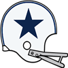
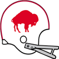
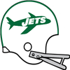
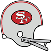
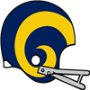
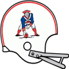
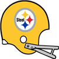

AFL Pro Bowl announced!The AFL Conference has announced their Pro Bowl squad for 1963.
QB Dean Look - Jets (344/487, 3590 yds, 28 TD)
QB Len Dawson - Chiefs (365/514, 4044 yds, 32 TD)
RB Wray Carlton - Bills (235 att, 932 yds, 3 TD, 36 rec, 550 yds, 3 TD)
RB Ron Burton - Patriots (169 att, 829 yds, 13 TD, 28 rec, 148 yds, 0 TD)
RB Abner Haynes - Chiefs (222 att, 734 yds, 5 TD, 55 rec, 324 yds, 1 TD)
FB Keith Lincoln - Chargers (43 att, 184 yds, 1 TD, 11 rec, 44 yds, 0 TD)
G Hogan Wharton - Oilers (59 Pancakes)
G Billy Shaw - Bills (66 Pancakes)
T Jerry DeLucca - Bills (78 Pancakes)
T Bob Vogel - Chargers (93 Pancakes)
C Mike Hudock - Jets (56 Pancakes)
C Jim Otto - Raiders (47 Pancakes)
TE Tony Romeo - Patriots (44 rec, 447 yds, 4 TD)
TE Marv Fleming - Raiders (38 rec, 487 yds, 1 TD)
WR Don Maynard - Jets (62 rec, 1122 yds, 9 TD)
WR Glenn Bass - Bills (52 rec, 936 yds, 11 TD)
WR Dee Mackey - Bills (59 rec, 1049 yds, 10 TD)
WR Lance Alworth - Chargers (79 rec, 1364 yds, 18 TD)
WR Frank Jackson - Chiefs (95 rec, 1132 yds, 10 TD)
CB Carl Charon - Bills (71 Tck, 5 Int, 1 Def TD)
CB Bud Whitehead - Chargers (76 Tck, 4 Int, 4 FF, 1 FR)
CB Duane Wood - Chiefs (67 Tck, 4 Int, 1 Def TD, 3 FF, 1 FR)
LB Larry Grantham - Jets (141 Tck, 1 Sck, 1 Int, 2 FF, 3 FR)
LB Mike Stratton - Bills (101 Tck, 9 Sck, 1 Int, 2 FF, 2 FR)
LB John Tracey - Bills (70 Tck, 11 Sck, 1 Int, 1 Def TD, 3 FF, 2 FR)
LB Sherrill Headrick - Chiefs (110 Tck, 10 Sck, 1 Int, 1 Def TD, 2 FF, 1 FR)
DT Earl Johnson - Oilers (41 Tck, 7 Sck)
DT Tom Sestak - Bills (42 Tck, 10 Sck, 1 Def TD, 3 FF, 2 FR)
DE Ron McDole - Oilers (33 Tck, 6 Sck, 1 FF)
DE Jerry Mays - Jets (37 Tck, 13 Sck, 2 FF)
FS Willie Brown - Jets (53 Tck, 2 Sck, 7 Int, 2 Def TD, 1 Blk FG, 2 FF)
FS Johnny Robinson - Chiefs (64 Tck, 3 Sck, 4 Int, 2 Def TD, 1 FF)
SS Dick Westmoreland - Bills (79 Tck, 1 Sck, 3 FF, 1 FR)
SS Jerry Logan - Patriots (85 Tck, 3 Sck, 1 Int, 2 FF, 2 FR)
K Fred Cox - Jets (25/30 FG)
P Jerrel Wilson - Broncos (3038 yards, 34 inside 20)NFL Pro Bowl announced!The NFL Conference has announced their Pro Bowl squad for 1963.
QB Sonny Jurgensen - Eagles (198/328, 3330 yds, 31 TD)
QB Johnny Unitas - Colts (298/462, 3347 yds, 30 TD)
RB Frank Gifford - Giants (261 att, 1160 yds, 7 TD, 35 rec, 240 yds, 2 TD)
RB John David Crow - Cardinals (283 att, 1334 yds, 12 TD, 29 rec, 220 yds, 1 TD)
RB Don Bishop - Cowboys (253 att, 1261 yds, 13 TD, 68 rec, 501 yds, 2 TD)
FB Jim Brown - Browns (73 att, 348 yds, 7 TD, 29 rec, 160 yds, 2 TD)
G Pete Case - Eagles (60 Pancakes)
G Larry Bowie - Vikings (61 Pancakes)
T Forrest Gregg - Packers (65 Pancakes)
T Jim Parker - Colts (73 Pancakes)
C Jim Schrader - Eagles (52 Pancakes)
C Jim Ringo - Packers (38 Pancakes)
TE Ralph Smith - Eagles (37 rec, 448 yds, 3 TD)
TE John Mackey - 49ers (49 rec, 484 yds, 3 TD)
WR Tommy McDonald - Eagles (46 rec, 990 yds, 11 TD)
WR Gary Collins - Browns (109 rec, 1222 yds, 8 TD)
WR Gary Ballman - Steelers (77 rec, 969 yds, 12 TD)
WR Jimmy Orr - Colts (96 rec, 1049 yds, 11 TD)
WR Carroll Dale - Rams (118 rec, 1257 yds, 5 TD)
CB Herb Adderley - Packers (61 Tck, 3 Int, 2 Def TD)
CB Dick Night Train Lane - Lions (102 Tck, 5 Int, 1 Def TD, 5 FF, 2 FR)
CB Jerry Mertens - 49ers (67 Tck, 10 Int)
LB Maxie Baughan - Eagles (106 Tck, 10 Sck, 4 FF)
LB Jim Houston - Browns (127 Tck, 7 Sck, 1 FF, 1 FR)
LB Chuck Howley - Cowboys (111 Tck, 6 Sck, 3 FF)
LB Dan Currie - Packers (80 Tck, 7 Sck, 2 Int, 1 Sfty, 3 FF, 2 FR)
DT Floyd Peters - Browns (29 Tck, 4 Sck, 3 FF)
DT Henry Jordan - Packers (41 Tck, 17 Sck, 2 FF, 1 FR)
DE Andy Robustelli - Giants (42 Tck, 11 Sck, 3 FF, 1 FR)
DE Willie Davis - Packers (31 Tck, 13 Sck, 3 FF, 2 FR)
FS Norm Beal - Cardinals (65 Tck, 4 Int, 1 Def TD, 5 FF, 3 FR)
FS Jimmy Hill - Cardinals (64 Tck, 5 Sck, 2 Int, 3 FF, 2 FR)
SS Jesse Whittenton - Packers (67 Tck, 3 Sck, 1 Int, 1 Def TD, 1 FF, 1 FR)
SS Willie Wood - Packers (68 Tck, 3 Sck, 3 FF, 3 FR)
K Mike Clark - Packers (37/43 FG)
P Brian Atwood - Rams (2492 yards, 21 inside 20)RB Tom Moore (GB) wins Playoff MVP! NEW YORK -- The Green Bay Packers' RB took home the 1963 Playoff MVP award today. Moore won the award by amassing playoff totals of 39 att, 173 yds, 1 TD, 6 rec, 29 yds, 0 TD. NEW YORK -- The Green Bay Packers' RB took home the 1963 Playoff MVP award today. Moore won the award by amassing playoff totals of 39 att, 173 yds, 1 TD, 6 rec, 29 yds, 0 TD.
RB Don Bishop (Dal) wins League MVP!NEW YORK -- The Dallas Cowboys' RB was a landslide winner Friday in balloting by a nationwide panel of 50 sports writers and broadcasters who cover the league. Bishop won the MVP award by amassing season totals of 253 att, 1261 yds, 13 TD, 68 rec, 501 yds, 2 TD.
"I really accept this award on behalf of the team and the organization because there is no way I would have accomplished this much without everyone creating a winning environment," Bishop said after receiving the award.DT Henry Jordan (GB) wins Defensive Player of the Year!NEW YORK -- In his own view, Henry Jordan put together his best professional season in 1963. How appropriate, then, that he is the Wolverine Studios Sports Newtwork 1963 Defensive Player of the Year.
The versatile Jordan had 41 tackles, 17 sacks, 0 interceptions, and 2 forced fumbles with 0 defensive touchdowns, and was a key to the Packers' turnaround on defense. His role on the defense earned Jordan a majority of votes Tuesday from a nationwide panel of 50 sports writers and broadcasters who cover the league.RB Don Bishop (Dal) wins Offensive Player of the Year!NEW YORK -- That blur speeding away from opposing defenses and running off with the Wolverine Studios Sports Network 1963 Offensive Player of the Year award is Don Bishop. Considered one of the fastest men in pro football, Bishop was uncatchable in racking up 1261 rushing yards on the season.
That earned the back 38 1/2 votes Wednesday from a nationwide panel of 50 sports writers and broadcasters who cover the league.
"I kind of realize what I did and I feel like I had a dream season," said Bishop, who scored 13 touchdowns.QB Scott Lee (Buf) wins Offensive Rookie of the Year!NEW YORK -- The Buffalo Bills' QB was a landslide winner Friday in balloting by a nationwide panel of 50 sports writers and broadcasters who cover the league. Lee won the Rookie of the Year award by amassing season totals of 209/356, 3136 yds, 27 TD.LB Dave Robinson (Chi) wins Defensive Rookie of the Year! NEW YORK -- The Chicago Bears' LB was a landslide winner Friday in balloting by a nationwide panel of 50 sports writers and broadcasters who cover the league. Robinson won the Rookie of the Year award by amassing season totals of 100 Tck, 6 Sck, 1 Int, 2 FF, 2 FR. NEW YORK -- The Chicago Bears' LB was a landslide winner Friday in balloting by a nationwide panel of 50 sports writers and broadcasters who cover the league. Robinson won the Rookie of the Year award by amassing season totals of 100 Tck, 6 Sck, 1 Int, 2 FF, 2 FR.
Detroit Lions resigns Bobby Wilson as Defensive Coordinator The Lions have announced that they have given Bobby Wilson a new contract. Wilson will continue to serve as Defensive Coordinator for 4 years earning 5 million pr year. The Lions have announced that they have given Bobby Wilson a new contract. Wilson will continue to serve as Defensive Coordinator for 4 years earning 5 million pr year.
1963 Super BowlThe Green Bay Packers have defeated the Kansas City Chiefs in the 1963 Super Bowl.
The final score was Packers 21 - Chiefs 3.
Forrest Gregg - T had a dominant game on offense playing a key part in the victory.
On defense Ray Nitschke - LB had a stellar outing helping seal the win.New York Jets resigns Jerrod Tatum as Offensive CoordinatorThe Jets have announced that they have given Jerrod Tatum a new contract. Tatum will continue to serve as Offensive Coordinator for 8 years earning 6 million pr year.NFL Championship GameThe Green Bay Packers have defeated the Philadelphia Eagles in the 1963 NFL Championship Game.
The final score was Packers 34 - Eagles 9.
Tom Moore - RB had a dominant game on offense playing a key part in the victory.
On defense Henry Jordan - DT had a stellar outing helping seal the win.AFL Championship Game The Kansas City Chiefs have defeated the New York Jets in the 1963 AFL Championship Game. The Kansas City Chiefs have defeated the New York Jets in the 1963 AFL Championship Game.
The final score was Jets 24 - Chiefs 27.
Don Maynard - WR had a dominant game on offense even while his team lost.
On defense Mel Branch - DE had a stellar outing helping seal the win.
New York Jets resigns Douglas Arredondo as Head CoachThe Jets have announced that they have given Douglas Arredondo a new contract. Arredondo will continue to serve as Head Coach for 3 years earning 3 million pr year.Week 16: CB Herb Adderley (GB) wins Defensive Player of the WeekCB Herb Adderley of the Green Bay Packers has earned the Defensive Player of the Week award. Adderley finished with 12 Tck, 1 Int, 1 Def TD.Week 16: RB Don Bishop (Dal) wins Offensive Player of the WeekThe honor comes after Bishop's 16 att, 242 yds, 4 TD, 6 rec, 89 yds, 0 TD performance against the Washington Redskins. Bishop from Los Angeles Community College was selected in round 0, 5 years ago.
Bishop now has 1261 Rushing Yards and 13 Touchdowns for the season.Game Recaps for Week 16Eagles - 34, Browns - 13
Cardinals - 31, Giants - 20
Cowboys - 48, Redskins - 21
Packers - 22, Rams - 7
Lions - 10, 49ers - 6
Colts - 42, Bears - 27
Vikings - 44, Steelers - 21
Chargers - 47, Bills - 17
Jets - 37, Oilers - 3
Chiefs - 34, Broncos - 7
Patriots - 32, Raiders - 29San Francisco 49ers resigns Gordon McCain as Head CoachThe 49ers have announced that they have given Gordon McCain a new contract. McCain will continue to serve as Head Coach for 3 years earning 4 million pr year.Game of the Week: Cleveland Browns at Philadelphia EaglesOur Expert Predictions:
Jeremy Piper : Philadelphia Eagles
This defense is likely to step up this week. They are 2nd in the league pass average yards per rush. They are 4th in forced fumbles.
Mary Moore : Cleveland Browns
Head coach Wilbur Crum has this team running like a well oiled machine.
Jim Nox : Philadelphia Eagles
Really this could go either way, but you will never get me to admit it.
Darren Francis : Philadelphia Eagles
Look for them to continue their winstreak.
No Pass Zone in Green Bay.Packers pass defense this year has been blistering this season, giving up only 2209 in 13 games. Said one member of the defensive backfield, ‘It’s like blood in the water when that ball goes in the air. We all turn into sharks. The scary kind, that jump outta the water and stuff.’.Green Bay Packers defense dominates!The Packers' defense is showing how it is done this season. In 13 games they’ve allowed only 2992 total yards and 139 points. Bill Forester - LB is the anchor of the defense with 79 tackles on the year. Could the D be back in Green Bay?Week 15: SS Willie Wood (GB) wins Defensive Player of the WeekSS Willie Wood of the Green Bay Packers has earned the Defensive Player of the Week award. Wood finished with 5 Tck, 2 FF, 2 FR.Week 15: QB Len Dawson (KC) wins Offensive Player of the WeekThe league announced Kansas City Chiefs quarterback Len Dawson has been named Offensive Player of the Week.
The Chiefs defeated the Oakland Raiders, 28 to 0. Dawson did his part, throwing 3 touchdowns, completing 29 of 34 passes for 480 yards. His outstanding performance now brings his season Touchdown to Interception Ratio to 30 to 6, and a passer rating of 109.3.Game Recaps for Week 15Cardinals - 31, Steelers - 7
Browns - 44, Redskins - 17
Eagles - 28, Cowboys - 20
Packers - 16, Bears - 3
Colts - 48, Vikings - 20
49ers - 24, Rams - 13
Chiefs - 28, Raiders - 0
Patriots - 31, Broncos - 28
Jets - 22, Oilers - 16San Francisco 49ers resigns Robert Wilder as Offensive CoordinatorThe 49ers have announced that they have given Robert Wilder a new contract. Wilder will continue to serve as Offensive Coordinator for 2 years earning 5 million pr year.Game of the Week: Green Bay Packers at Chicago BearsOur Expert Predictions:
Jeremy Piper : Chicago Bears
For this game, certainly, you have to think that Bears got to love fielding Bill George - LB on their defense. This man will be critical this week, and will give the offense plenty of trouble.
Mary Moore : Green Bay Packers
This will be watercooler talk on monday. Do not miss it.
Jim Nox : Chicago Bears
They field one of the most underestimated offenses. They are 3rd in the league in sacks allowed.
Darren Francis : Chicago Bears
For this game, my gut tells me that you cannot keep Ronnie Bull - RB down for an entire game. Eventually he will come out of the blue and make a big play. A double digit win.
Trouble for Los Angeles Rams.Pressure is mounting in Los Angeles owing to their 3-9-0 record this season. Many inside and outside the building are calling for some serious soul searching, something that is expected to already be under wayMinnesota Vikings take home the upset victory! The Minnesota Vikings surprises everyone with an unlikely road win against Detroit Lions. The Minnesota Vikings surprises everyone with an unlikely road win against Detroit Lions.
The Lions never manage to take control of the game, while the Vikings kept grinding and drove the victory home. The Lions players had expected an easy victory, and this will be a bitter loss and a tough blow to the self-respect of the program. Meanwhile the Vikings fans are ecstatic and are already entertaining thoughts about a cinderella future.
Week 14: QB George Blanda (Hou) wins Offensive Player of the Week The league announced Houston Oilers quarterback George Blanda has been named Offensive Player of the Week. The league announced Houston Oilers quarterback George Blanda has been named Offensive Player of the Week.
The Oilers defeated the Denver Broncos, 52 to 31. Blanda did his part, throwing 4 touchdowns, completing 29 of 34 passes for 345 yards. His outstanding performance now brings his season Touchdown to Interception Ratio to 20 to 4, and a passer rating of 113.2.
Coach Showdown with Simon Sly (Season 1963 Week 15)Simon Sly is back with this week's edition of Coach Showdown. Let us jump right in.
WILLIE MORGAN, OFFENSIVE COORDINATOR, WASHINGTON REDSKINS
The Redskins currently sit at 4-8.
Willie Morgan wants to be aggressive on offense. He loves football, and it shows that this is his dreamjob. His eagerness to discuss all aspects of the game is infectious in an organisation.
Willie Morgan runs a run first Power offense. He runs mostly from power formations. It's about taking what the defense gives you in the passing game, according to Morgan. His offense relies on big wide receivers.
They are 7th in the league pass completion percentage. They are 13th in the league passing touchdowns with 18. They are 19th in the league passing yards per game. Averaging 204.2.They are 6th in the league in sacks allowed.They are 19th in the league in pancakes.They are 18th in the league in passes of more than 20 yards.They are 14th in the league average yards per rush.They are 7th in the league rushing touchdowns with 11.They are 14th in the league rushing yards per game. They average 97.They are 19th in the league points scored per game. With an average of 19.2.
Morgan outperforms Scarborough in scouting.
Morgan is slightly better than Scarborough at estimating player potential.
Morgan exhibits way more flexibility than Scarborough.
Morgan is better suited to lead a team than Scarborough.
Morgan motivates his team a little better than Scarborough.
Morgan makes his players hit the weight room more often than Scarborough.
DALE SCARBOROUGH, OFFENSIVE COORDINATOR, PHILADELPHIA EAGLES
The Eagles currently sit at 5-6.
Dale Scarborough runs his offense conservatively. He adapts his demeanor to the situation, and does whatever he thinks it takes to get through to his players and co-workers.
Dale Scarborough runs a run first Spread Hybrid offense. He wants his running backs to focus on running the ball, limiting their other duties. He runs mostly from power formations. It's about taking what the defense gives you in the passing game, according to Scarborough. He likes receivers who can stretch the field.
They are 21st in the league pass completion percentage.
They are 5th in the league passing touchdowns with 24.
They are 9th in the league passing yards per game. Averaging 245.8.
They are 22nd in the league in sacks allowed.
They are 3rd in the league in pancakes.
They are 2nd in the league in passes of more than 20 yards.
They are 2nd in the league average yards per rush.
They are 19th in the league rushing touchdowns with 6.
They are 16th in the league rushing yards per game. They average 95.9.
They are 18th in the league points scored per game. With an average of 21.
Scarborough is a better offisive mind than Morgan.
Week 14: DE Jerry Mays (NYJ) wins Defensive Player of the WeekDE Jerry Mays of the New York Jets has earned the Defensive Player of the Week award. Mays finished with 5 Tck, 2 Sck, 1 FF.Game Recaps for Week 14Eagles - 27, Redskins - 20
Vikings - 15, Lions - 14
Colts - 13, 49ers - 13
Cardinals - 27, Cowboys - 14
Browns - 21, Bears - 16
Giants - 42, Rams - 3
Bills - 30, Jets - 22
Oilers - 52, Broncos - 31
Chiefs - 27, Chargers - 20
Patriots - 44, Raiders - 10Game of the Week: Buffalo Bills at New York JetsOur Expert Predictions:
Jeremy Piper : New York Jets
They might even win with three touchdowns.
Mary Moore : Buffalo Bills
The Bills are the real deal.
Jim Nox : Buffalo Bills
In the context of this game, I think a good bet is that you have to focus on this LB named Mike Stratton. I expect everyone knows this guy will be a wrecking ball. I am really on the fence for this one, but I stand my prediction.
Darren Francis : New York Jets
I see them winning again this week. There will be some very good football to watch here.
Big boys shows the way in Buffalo.The guys in the offensive trenches from Bills are dirt rolling defenders this year. They’ve given up only 18 sacks in 12 games while collecting 436 pancakes.Aragon struggling with injuriesAn anonymous source in the Packers' locker room claim Ralph Aragon - P is struggling to shake the injury bug. Said one anonymous coach: 'he is a good kid, and he wants to play. We all wish he would get back to form. This is frustrating for everyone including Ralph'.Week 13: LB Doug Cline (Hou) wins Defensive Player of the WeekLB Cline absolutely dominated in the Oilers 24-13 game with the Oakland Raiders. He finished with 7 Tck, 2 Sck, 1 FF, 1 FR.Week 13: RB Ron Burton (Bos) wins Offensive Player of the WeekWeek 13's Offensive Player of the Week is Running Back Ron Burton. His 11 att, 173 yds, 2 TD performance stood out in the 37 to 28 victory for the New York Jets.
The former Northwestern gridiron star is racking up the rushing yards and now has 718 Yards and 9 Touchdowns for the season.Game Recaps for Week 13Browns - 20, Steelers - 17
Eagles - 31, Cardinals - 28
Cowboys - 16, Giants - 13
Bears - 26, Packers - 15
Lions - 34, Colts - 14
Rams - 35, Vikings - 28
49ers - 13, Redskins - 7
Jets - 37, Patriots - 28
Bills - 27, Chiefs - 24
Broncos - 31, Chargers - 24
Oilers - 24, Raiders - 13Game of the Week: Chicago Bears at Green Bay PackersOur Expert Predictions:
Jeremy Piper : Green Bay Packers
Their win streak will not be broken in this game. This will be watercooler talk on monday. Do not miss it.
Mary Moore : Green Bay Packers
Looking at how the teams match up, I know it is not trendy, but I think that Herb Adderley - CB will ruin your day on offense.
Jim Nox : Green Bay Packers
The difference in this game will be their offense. They are 1st in the league rushing touchdowns with 14. They are 4th in the league rushing yards per game. They average 112.4! They are 2nd in the league points scored per game. They average 28.4!
Darren Francis : Chicago Bears
Certainly, this defense will have a good game. They are 2nd in points allowed, averaging only 15.3. They are 2nd in run defense. Giving up only 69.7 yards per game. They are 4th in the league in tackles for loss.
Defense dominates in Green Bay.The Packers front four is riddling opposing offenses so far this season with a total of 31 sacks, 4 forced fumbles and 84 tackles in 11 games.Week 12: QB Len Dawson (KC) wins Offensive Player of the WeekThe Kansas City Chiefs' Len Dawson threw 5 touchdowns, completing 33 of 37 passes for 454 yards in the Chiefs victory over the Oakland Raiders.
After being drafted in Round 0 of the 0 amateur draft, season number 6 for Dawson, has seen some impressive numbers including 24 touchdown passes this season.Coach Showdown with Simon Sly (Season 1963 Week 13)Simon Sly is back with this week's edition of Coach Showdown. I will spare you the meandering and cut to the chase.
LARRY GOOD, DEFENSIVE COORDINATOR, SAN FRANCISCO 49ERS
The 49ers currently sit at 5-4.
Larry Good favors an aggressive defense. He adapts his demeanor to the situation, and does whatever he thinks it takes to get through to his players and co-workers.
Larry Good runs a 3-3-5 defense. The defense revolves around the linebackers. He prefers mixing up coverage. He wants fast linebackers, who can help in coverage.
They are 16th in sacks with 20.
They are 5th in points allowed, averaging 19.
They are 4th in pass defense with 210 yards given up per game.
They are 7th in run defense. Giving up 92.3 yards per game.
They are 2nd in interceptions with 17.
They are 13th in the league in tackles for loss.
They are 10th in forced fumbles.
Good outperforms Nelson in scouting.
Good outperforms Nelson in assessing player ability.
Good has a slightly better grasp of coaching defense than Nelson.
Good outperforms Nelson in player development.
Good is better suited to lead a team than Nelson.
Good prepares better than Nelson.
LUKE NELSON, DEFENSIVE COORDINATOR, DENVER BRONCOS
The Broncos currently sit at 2-7.
Luke Nelson wants to stay unpredictable on defense, favoring a balanced approach. He loves football, and it shows that this is his dreamjob. His eagerness to discuss all aspects of the game is infectious in an organisation.
Luke Nelson runs a 3-3-5 Hybrid defense. The onus is on the safeties in his system. It features primarily zone coverage. He wants defensive linemen who can help in runsupport. Nelson aims to field versatile linebackers.
They are 21st in sacks with 14.
They are 16th in points allowed, averaging 28.1.
They are 18th in pass defense with 259.4 yards given up per game.
They are 17th in run defense. Giving up 114.8 yards per game.
They are 16th in interceptions with 8.
They are 9th in the league in tackles for loss.
They are 16th in forced fumbles.
Nelson is slightly more detail oriented than Good.
Nelson exhibits way more flexibility than Good.
Week 12: FS Jimmy Johnson (SF) wins Defensive Player of the WeekFS Johnson's ball hawking ability was on display in the 49ers 33-8 game with the Minnesota Vikings. He finished with 3 Tck, 1 Int, 1 Def TD.
"Jimmy has the unique ability to make plays and generate turnovers." -49ers Defensive CoordinatorGame Recaps for Week 12Browns - 20, Steelers - 20
Cowboys - 30, Giants - 17
Bears - 27, Rams - 3
49ers - 33, Vikings - 8
Eagles - 40, Cardinals - 24
Lions - 30, Colts - 20
Jets - 31, Broncos - 17
Chiefs - 58, Raiders - 24
Bills - 45, Chargers - 21
Oilers - 20, Patriots - 9Houston Oilers resigns Cody Lowe as Defensive CoordinatorThe Oilers have announced that they have given Cody Lowe a new contract. Lowe will continue to serve as Defensive Coordinator for 5 years earning 3.6 million pr year.Buffalo Bills resigns Theodore Dwyer as Offensive CoordinatorThe Bills have announced that they have given Theodore Dwyer a new contract. Dwyer will continue to serve as Offensive Coordinator for 7 years earning 4.8 million pr year.Chicago Bears resigns Clark Magee as Head CoachThe Bears have announced that they have given Clark Magee a new contract. Magee will continue to serve as Head Coach for 7 years earning 2.5 million pr year.Game of the Week: Buffalo Bills at San Diego ChargersOur Expert Predictions:
Jeremy Piper : San Diego Chargers
They are well coached. I am sure head coach Kevin Mireles has them prepared for this game.
Mary Moore : San Diego Chargers
Looking at how the teams match up, I think a good bet is that Earl Faison - DE has to potential to carry the Chargers defense. This will be a great game to watch.
Jim Nox : Buffalo Bills
You just have to look at their defense. They are 2nd in sacks with 38. They are 3rd in run defense. Giving up only 78.2 yards per game. They are 1st in the league in tackles for loss. They are 2nd in forced fumbles.
Darren Francis : San Diego Chargers
Team play. Playing as a unit. You cannot discount the difference it makes. I am thinking of a guy like Earl Faison - DE. Playing as a team is what gets them the win.
Week 11: DT Henry Jordan (GB) wins Defensive Player of the WeekDT Jordan absolutely dominated in the Packers 27-17 game with the Philadelphia Eagles. He finished with 5 Tck, 4 Sck, 1 FF.Week 11: RB John David Crow (StL) wins Offensive Player of the Week Week 11's Offensive Player of the Week is Running Back John David Crow. His 26 att, 175 yds, 2 TD performance stood out in the 29 to 21 victory for the St. Louis Cardinals. Week 11's Offensive Player of the Week is Running Back John David Crow. His 26 att, 175 yds, 2 TD performance stood out in the 29 to 21 victory for the St. Louis Cardinals.
The former Texas A&M gridiron star is racking up the rushing yards and now has 989 Yards and 8 Touchdowns for the season.
Redskins lost. Redskins casts blame. Harsh words after the Redskins - Cowboys game from Jim Steffen. The Redskins SS called out the Redskins' players, suggesting some of his teammates were phoning it in. Jim Steffen - SS was clearly upset after the Redskins loss. 'We need to look at ourselves. If you are Sherman Plunkett (T), can you look at your performance and be happy? This whole team needs to work harder. This whole team needs to decide what we want', the SS said. Harsh words after the Redskins - Cowboys game from Jim Steffen. The Redskins SS called out the Redskins' players, suggesting some of his teammates were phoning it in. Jim Steffen - SS was clearly upset after the Redskins loss. 'We need to look at ourselves. If you are Sherman Plunkett (T), can you look at your performance and be happy? This whole team needs to work harder. This whole team needs to decide what we want', the SS said.
Game Recaps for Week 11Bears - 24, Vikings - 24
Lions - 24, Rams - 17
Cardinals - 29, Redskins - 21
Packers - 27, Eagles - 17
Chargers - 43, Broncos - 24
Oilers - 21, Chiefs - 20Buffalo Bills resigns Robert Thompson as Defensive CoordinatorThe Bills have announced that they have given Robert Thompson a new contract. Thompson will continue to serve as Defensive Coordinator for 4 years earning 4.8 million pr year.Game of the Week: Philadelphia Eagles at Green Bay PackersOur Expert Predictions:
Jeremy Piper : Green Bay Packers
I really like their defense. They are 1st in sacks with 46. They are 1st in points allowed, averaging only 9.3. They are 1st in pass defense. They only give up 158.6 per game. They are 1st in run defense. Giving up only 53.8 yards per game. They are 4th in interceptions with 11. They are 2nd in the league in tackles for loss. They get their win and this game will be just another day at the office.
Mary Moore : Green Bay Packers
The Packers have really strong team play. You look at a player like Andy Russell - LB and what he does for a team. He makes everyone around him better. The referees will have their work cut out for them. This will be very competitive and intense.
Jim Nox : Green Bay Packers
I think their offense is really good. They are maulers, 4th in the league in pancakes. They are 5th in the league in passes of more than 20 yards. They are 3rd in the league rushing touchdowns with 12. They are 3rd in the league points scored per game. They average 28.5! If they do not win, I have to buy cake for the entire office. That is how sure I am.
Darren Francis : Green Bay Packers
I am sure head coach Matthew Berman has something up his sleeve for this game. Offensively he is a great and innovative thinker.
Coach Showdown with Simon Sly (Season 1963 Week 11)Time for this weeks get to know your coaches. As always, Simon Sly deliver with this weeks coach comparison. We have an odd couple for you this week.
ALFONSO HUTCHESON, DEFENSIVE COORDINATOR, WASHINGTON REDSKINS
The Redskins currently sit at 4-5.
Alfonso Hutcheson does not like gambling on defense. Advocating a bend, but don't break mindset. Professionalism is the key for him. He demands accountability from everyone around him.
Alfonso Hutcheson runs a 4-3 defense. The defense revolves around the linebackers. It features primarily zone coverage. He targets the rungame, daring the offense to pass. He wants fast linebackers, who can help in coverage.
They are 14th in sacks with 19.
They are 22nd in points allowed, averaging 31.2.
They are 16th in pass defense with 243.8 yards given up per game.
They are 22nd in run defense. Giving up 135.4 yards per game.
They are 9th in interceptions with 8.
They are 12th in the league in tackles for loss.
They are 13th in forced fumbles.
Hutcheson outperforms Blythe in scouting.
Hutcheson is slightly more detail oriented than Blythe.
Hutcheson takes much more command and is more respected by his players than Blythe.
ALVIN BLYTHE, DEFENSIVE COORDINATOR, ST. LOUIS CARDINALS
The Cardinals currently sit at 3-4.
Alvin Blythe does not like gambling on defense. Advocating a bend, but don't break mindset. Professionalism is the key for him. He demands accountability from everyone around him.
Alvin Blythe runs a 3-3-5 defense. The defense revolves around the linebackers. It features primarily zone coverage. He targets the rungame, daring the offense to pass. To fit his scheme, linebackers must be sure tacklers, who can help shut down the run.
They are 21st in sacks with 12.
They are 13th in points allowed, averaging 24.
They are 15th in pass defense with 241.1 yards given up per game.
They are 20th in run defense. Giving up 126.5 yards per game.
They are 8th in interceptions with 8.
They are 22nd in the league in tackles for loss.
They are 12th in forced fumbles.
Blythe is slightly better than Hutcheson at estimating player potential.
Blythe motivates his team a little better than Hutcheson.
Week 10: QB Sonny Jurgensen (Phi) wins Offensive Player of the Week The Philadelphia Eagles' Sonny Jurgensen threw 3 touchdowns, completing 21 of 36 passes for 410 yards in the Steelers victory over the Philadelphia Eagles. The Philadelphia Eagles' Sonny Jurgensen threw 3 touchdowns, completing 21 of 36 passes for 410 yards in the Steelers victory over the Philadelphia Eagles.
After being drafted in Round 0 of the 0 amateur draft, season number 6 for Jurgensen, has seen some impressive numbers including 15 touchdown passes this season.
Week 10: FS Ted Rzempoluch (Oak) wins Defensive Player of the Week FS Rzempoluch's ball hawking ability was on display in the Chargers 37-13 game with the Oakland Raiders. He finished with 8 Tck, 2 Int, 1 Def TD. FS Rzempoluch's ball hawking ability was on display in the Chargers 37-13 game with the Oakland Raiders. He finished with 8 Tck, 2 Int, 1 Def TD.
"Ted has the unique ability to make plays and generate turnovers." -Raiders Defensive Coordinator
Game Recaps for Week 10Steelers - 37, Eagles - 27
Browns - 36, Giants - 26
Cowboys - 34, Redskins - 13
Packers - 16, Colts - 14
49ers - 30, Lions - 20
Bears - 29, Rams - 24
Bills - 21, Oilers - 13
Jets - 29, Broncos - 20
Patriots - 14, Chiefs - 14
Chargers - 37, Raiders - 13Houston Oilers resigns Francisco James as Offensive CoordinatorThe Oilers have announced that they have given Francisco James a new contract. James will continue to serve as Offensive Coordinator for 7 years earning 3.6 million pr year.Green Bay Packers resigns William Betz as Offensive CoordinatorThe Packers have announced that they have given William Betz a new contract. Betz will continue to serve as Offensive Coordinator for 4 years earning 3.6 million pr year.Game of the Week: Baltimore Colts at Green Bay PackersOur Expert Predictions:
Jeremy Piper : Green Bay Packers
They are on a win streak. They will continue that streak. They will win this game. It might be a high scoring game.
Mary Moore : Baltimore Colts
I really think their offense will make the difference. They are 2nd in the league passing touchdowns with 21. They are 2nd in the league points scored per game. They average 30.5! It might be a high scoring game.
Jim Nox : Green Bay Packers
Looking at how the teams match up, it seems obvious that Willie Wood will be dominant here. The young SS is going to destroy the offense.
Darren Francis : Green Bay Packers
I do not think their defense gets enough credit. They are 1st in sacks with 45. They are 1st in points allowed, averaging only 8.8. They are 1st in pass defense. They only give up 151 per game. They are 1st in run defense. Giving up only 54.1 yards per game. They are 3rd in interceptions with 11. They are 2nd in the league in tackles for loss. Can't lose.
Week 9: RB Bernie Casey (SF) wins Offensive Player of the WeekThe honor comes after Casey's 12 att, 160 yds, 2 TD performance against the Minnesota Vikings. Casey from Bowling Green was selected in round 0, 2 years ago.
Casey now has 502 Rushing Yards and 4 Touchdowns for the season.Week 9: DE Willie Davis (GB) wins Defensive Player of the WeekDE Willie Davis of the Green Bay Packers has earned the Defensive Player of the Week award. Davis finished with 4 Tck, 3 Sck.Game Recaps for Week 9Redskins - 27, Eagles - 17
Giants - 38, Steelers - 21
Cowboys - 33, Cardinals - 26
Packers - 34, Lions - 7
49ers - 48, Vikings - 14
Colts - 41, Rams - 31
Bears - 20, Browns - 13
Chiefs - 20, Jets - 14
Bills - 31, Broncos - 20
Oilers - 41, Raiders - 7
Chargers - 19, Patriots - 7Kansas City Chiefs resigns Donald Chan as Defensive CoordinatorThe Chiefs have announced that they have given Donald Chan a new contract. Chan will continue to serve as Defensive Coordinator for 3 years earning 5.8 million pr year.Game of the Week: Detroit Lions at Green Bay PackersOur Expert Predictions:
Jeremy Piper : Detroit Lions
I really like their offense. They are 4th in the league pass completion percentage.
Mary Moore : Detroit Lions
When you consider the two rosters, a good bet is that Yale Lary - CB is bound to have an impact. The offense will have to gameplan for him if they want to stand even the slightest chance. They will rack up a lot of points.
Jim Nox : Detroit Lions
This defense is likely to step up this week. They are 4th in points allowed, averaging only 17.9. They are 5th in pass defense. They only give up 209.9 per game. They are 1st in forced fumbles.
Darren Francis : Green Bay Packers
I think having a team players like Andy Russell - LB is the kind of thing that will help the Packers win this game. I expect some incredible plays in this game.
Week 8: DT Tom Sestak (Buf) wins Defensive Player of the WeekDT Sestak absolutely dominated in the Bills 33-25 game with the Denver Broncos. He finished with 7 Tck, 3 Sck.Week 8: QB Ed Brown (Pit) wins Offensive Player of the WeekThe league announced Pittsburgh Steelers quarterback Ed Brown has been named Offensive Player of the Week.
The Steelers defeated the Washington Redskins, 49 to 28. Brown did his part, throwing 5 touchdowns, completing 25 of 29 passes for 284 yards. His outstanding performance now brings his season Touchdown to Interception Ratio to 18 to 3, and a passer rating of 111.5.Coach Showdown with Simon Sly (Season 1963 Week 9)Simon Sly is here to bring you another edition of Coach Showdown. This week features to interesting specimens.
WILLIAM LAWSON, DEFENSIVE COORDINATOR, MINNESOTA VIKINGS
The Vikings currently sit at 1-6.
William Lawson does not like gambling on defense. Advocating a bend, but don't break mindset. He adapts his demeanor to the situation, and does whatever he thinks it takes to get through to his players and co-workers.
William Lawson runs a 5-2 defense. The scheme depends on dominating in the trenches. He prefers mixing up coverage. He wants defensive linemen who can help in runsupport. Lawson aims to field versatile linebackers.
They are 22nd in sacks with 7.
They are 16th in points allowed, averaging 25.4.
They are 10th in pass defense with 234.3 yards given up per game.
They are 10th in run defense. Giving up 97.9 yards per game.
They are 19th in interceptions with 3.
They are 17th in the league in tackles for loss.
They are 18th in forced fumbles.
Lawson makes his players hit the weight room more often than Chan.
Lawson works with young players somewhat better than Chan.
DONALD CHAN, DEFENSIVE COORDINATOR, KANSAS CITY CHIEFS
The Chiefs currently sit at 4-2.
Donald Chan favors an aggressive defense. Professionalism is the key for him. He demands accountability from everyone around him.
Donald Chan runs a 4-3 Hybrid defense. The onus is on the safeties in his system. He prefers mixing up coverage. He wants fast linebackers, who can help in coverage.
They are 5th in sacks with 22.
They are 6th in points allowed, averaging 19.2.
They are 8th in pass defense with 227.2 yards given up per game.
They are 8th in run defense. Giving up 95.5 yards per game.
They are 5th in interceptions with 8.
They are 15th in the league in tackles for loss.
They are 9th in forced fumbles.
Chan is significantly better than Lawson in judging player potential.
Game Recaps for Week 8Steelers - 49, Redskins - 28
Packers - 17, Vikings - 6
Giants - 14, Cardinals - 14
Bills - 33, Broncos - 25Trade AlertThe Raiders trade Ed Cooke - DE and a Raiders 1965 5th Round Pick to the Vikings for Jim Marshall - DE.Trade AlertThe Cardinals trade Bill Nelsen - QB and a Cardinals 1964 5th Round Pick to the Cowboys for Don Meredith - QB.Game of the Week: Green Bay Packers at Minnesota VikingsOur Expert Predictions:
Jeremy Piper : Green Bay Packers
The Packers win. You can quote me on that.
Mary Moore : Green Bay Packers
They will keep their winstreak going. We will be talking about this game for a long time.
Jim Nox : Green Bay Packers
They play great together. Having a guy like Andy Russell - LB on the field who understands what everyone needs to do and helping them play as a unit will help them a great deal in this game.
Darren Francis : Green Bay Packers
They have a dominant offense. They do not get enough credit for that. They are 1st in the league passing yards per game. They average 273.3! They are maulers, 5th in the league in pancakes. They are 5th in the league rushing touchdowns with 7. They are 1st in the league points scored per game. They average 31.1!
Dallas Cowboys surprise everyone!The Dallas Cowboys fans are celebrating after the Cowboys took down the Pittsburgh Steelers.
In a superb effort the Cowboys kept at it, and brought home the win. The Steelers are widely considered to be the better of the two programs, but with the Cowboys winning the fans are hoping that the Cowboys will soon be able to dance with the big boys.Patriots lost. Patriots blames coaching.Jerry Logan pointed the finger at his coaches in analyzing the Patriots loss. 'We have to step up, all of us' he said, and continued: 'But they, the coaches, have to get us ready and have the right gameplan. Well, we were not ready and we had the wrong gameplan'. 'Sure, we lost, but we were playing well. I think this is a testament to our character and preparation' said the Patriots SS. He added: 'The Bills are a good team, but I we played our hearts out and kept grinding. We learned a lot from this game, and it will help us in the future'.Week 7: CB Bobby Freeman (Was) wins Defensive Player of the WeekCB Freeman's ball hawking ability was on display in the Browns 20-19 game with the Washington Redskins. He finished with 4 Tck, 1 Int, 1 Def TD, 2 FF.
"Bobby has the unique ability to make plays and generate turnovers." -Redskins Defensive CoordinatorWeek 7: QB Scott Lee (Buf) wins Offensive Player of the WeekThe league announced Buffalo Bills quarterback Scott Lee has been named Offensive Player of the Week.
The Bills defeated the Boston Patriots, 42 to 17. Lee did his part, throwing 4 touchdowns, completing 23 of 30 passes for 377 yards. His outstanding performance now brings his season Touchdown to Interception Ratio to 9 to 4, and a passer rating of 98.6.Game Recaps for Week 7Eagles - 28, Giants - 28
Cowboys - 49, Steelers - 0
Browns - 20, Redskins - 19
Bears - 31, Vikings - 17
Packers - 30, Rams - 20
49ers - 20, Colts - 20
Cardinals - 24, Lions - 23
Bills - 42, Patriots - 17
Jets - 31, Chiefs - 24
Chargers - 34, Raiders - 34
Broncos - 25, Oilers - 25Trade AlertThe Raiders trade Chuck McMurtry - DT and a Raiders 1964 5th Round Pick to the Vikings for Paul Dickson - DT.Trade AlertThe Patriots trade George Preas - T and a Patriots 1964 5th Round Pick to the Chargers for Walt Rock - T.Game of the Week: New York Jets at Kansas City ChiefsOur Expert Predictions:
Jeremy Piper : New York Jets
They field one of the most underestimated defenses. They are 2nd in interceptions with 10.
Mary Moore : New York Jets
They will rely on their offense to pull them through. They are 5th in the league passing touchdowns with 13. They are 2nd in the league in sacks allowed. And you can take that with you to the bank.
Jim Nox : New York Jets
This will be watercooler talk on monday. Do not miss it.
Darren Francis : New York Jets
I find it hard to bet against coach Douglas Arredondo. He always has them well prepared. They win big.
Top receiver trio?The Rams trio of Carroll Dale - WR, Red Phillips - WR and Pervis Atkins - WR are currently the leading trio of offensive skill players catching the ball in the league, with 1229 receiving yards between the three.San Francisco 49ers surprise everyone!With an outstanding effort the San Francisco 49ers pull off the upset against Chicago Bears.
Everyone had expected the Chicago Bears to handle the San Francisco 49ers with ease, but the 49ers just wanted it more. This was really a must win game for the Bears, and the loss will surely put a dent in their confidence.Bills keeping tabs on KinderAn individual with connections in the Bills' locker room says that Otto Kinder - G is angry about being monitored by coaches. Kinder claims he is being singled out, and that coaches are looking for an excuse to get rid of him. Sources in the building say Kinder has been vocal about what he sees as unfair persecution and have divided the locker room on the issue.Coach Showdown with Simon Sly (Season 1963 Week 7)Simon Sly is back with this week's edition of Coach Showdown. This is an interesting week.
JOSEPH CONN, HEAD COACH, PITTSBURGH STEELERS
The Steelers currently sit at 5-1.
Joseph Conn wants his offense and defense to play smart, conservative football. Let the other team make the mistakes. He adapts his demeanor to the situation, and does whatever he thinks it takes to get through to his players and co-workers.
Conn is significantly better than Magee when scouting.
Conn is slightly more detail oriented than Magee.
Conn is a better offisive mind than Magee.
Conn outperforms Magee in player development.
Conn works with young players somewhat better than Magee.
CLARK MAGEE, HEAD COACH, CHICAGO BEARS
The Bears currently sit at 4-1.
Clark Magee wants his offense and defense to play smart, conservative football. Let the other team make the mistakes. Professionalism is the key for him. He demands accountability from everyone around him.
Magee is not as rigid as Conn.
Magee is better suited to lead a team than Conn.
Magee motivates his team a little better than Conn.
Magee makes his players hit the weight room more often than Conn.
Week 6: CB Dick Night Train Lane (Det) wins Defensive Player of the WeekCB Dick Night Train Lane of the Detroit Lions has earned the Defensive Player of the Week award. Lane finished with 11 Tck, 1 Int, 1 Def TD, 2 FF, 1 FR.Week 6: RB John David Crow (StL) wins Offensive Player of the WeekThe honor comes after Crow's 17 att, 176 yds, 2 TD performance against the St. Louis Cardinals. Crow from Texas A&M was selected in round 0, 5 years ago.
Crow now has 558 Rushing Yards and 5 Touchdowns for the season.Game Recaps for Week 6Steelers - 27, Cowboys - 21
Giants - 20, Browns - 17
Redskins - 35, Cardinals - 32
Lions - 27, Rams - 21
49ers - 35, Bears - 20
Colts - 38, Vikings - 25
Packers - 36, Eagles - 3
Jets - 19, Raiders - 7
Chiefs - 45, Broncos - 17
Oilers - 45, Chargers - 7
Bills - 33, Patriots - 23Trade AlertThe Jets trade Moses Gray - T and a Jets 1964 5th Round Pick to the Steelers for Dan James - T.Trade AlertThe Eagles trade John Baker - DE and a Eagles 1964 5th Round Pick to the 49ers for Bob Petrich - DE.Game of the Week: Chicago Bears at San Francisco 49ersOur Expert Predictions:
Jeremy Piper : Chicago Bears
The Bears are the real deal. You heard it here first.
Mary Moore : Chicago Bears
For this match up, you would be a fool not to think Rosey Taylor - SS is the guy to watch, this man is pivotal to the Bears defense.
Jim Nox : Chicago Bears
The difference in this game will be their defense. They are 2nd in points allowed, averaging only 9.2. They are 1st in run defense. Giving up only 55.2 yards per game. They win big.
Darren Francis : Chicago Bears
In this game, I think a good bet is that there is this SS named Rosey Taylor. He is getting paid a lot. The reason he is getting paid a lot is that he is really good. Do I need to say more?
Big boys shows the way in Buffalo.The big men from Bills are dirt rolling defenders this year. They’ve given up only 11 sacks in 5 games while collecting 189 pancakes.San Francisco 49ers surprise everyone!The San Francisco 49ers have managed an unlikely win against Washington Redskins.
The Redskins appeared dejected towards the end of the game, while the 49ers kept their cool and drove the victory home. Most pundits had expected the Redskins to win with ease, and the loss to such an inferior opponent is a tough blow to the lofty expectations for the program. Meanwhile, the 49ers fans were celebrating in the street, having had their hopes for the future bolstered at least momentarily.Week 5: QB John Hadl (SD) wins Offensive Player of the Week The league announced San Diego Chargers quarterback John Hadl has been named Offensive Player of the Week. The league announced San Diego Chargers quarterback John Hadl has been named Offensive Player of the Week.
The Chargers defeated the New York Jets, 40 to 35. Hadl did his part, throwing 5 touchdowns, completing 32 of 41 passes for 352 yards. His outstanding performance now brings his season Touchdown to Interception Ratio to 10 to 8, and a passer rating of 79.7.
Week 5: DE Willie Davis (GB) wins Defensive Player of the WeekDE Willie Davis of the Green Bay Packers has earned the Defensive Player of the Week award. Davis finished with 5 Tck, 2 Sck, 1 FF, 1 FR.Game Recaps for Week 5Steelers - 31, Giants - 10
Cowboys - 21, Browns - 17
Vikings - 37, Rams - 17
Packers - 48, Colts - 17
Lions - 27, Cardinals - 24
49ers - 35, Redskins - 7
Raiders - 20, Bills - 12
Chargers - 40, Jets - 35
Patriots - 34, Chiefs - 10Trade AlertThe Jets trade John Paluck - DE and a Jets 1964 3rd Round Pick to the Chiefs for Jerry Mays - DE.Game of the Week: Green Bay Packers at Baltimore ColtsOur Expert Predictions:
Jeremy Piper : Green Bay Packers
Head coach Matthew Berman has this team running like a well oiled machine. He is has a really good understanding of what works offensively.
Mary Moore : Green Bay Packers
Team play. Playing as a unit. You cannot discount the difference it makes. I am thinking of a guy like Andy Russell - LB. Playing as a team is what gets them the win.
Jim Nox : Green Bay Packers
For this match up, a good bet is that the Packers' defense goes through John Symank - CB. This man has the ability to change games. A close win.
Darren Francis : Green Bay Packers
When you consider the two rosters, a good bet is that Jerry Kramer - G needs to show up, but if he does the Packers will be putting up points.
Winning pleases everyone.Redskins fans are celebrating this week after their team beat the brakes off the Giants. Irving Castro said of his team, ‘We showed what we're made of’Coach Showdown with Simon Sly (Season 1963 Week 5)Simon Sly is here to bring you another edition of Coach Showdown. We have an odd couple for you this week.
BRIAN LASHLEY, OFFENSIVE COORDINATOR, DENVER BRONCOS
The Broncos currently sit at 2-1.
Brian Lashley runs his offense conservatively. He adapts his demeanor to the situation, and does whatever he thinks it takes to get through to his players and co-workers.
Brian Lashley runs a run first Spread offense. It features running backs out of the backfield in the passing game. His offense features a dink and dunk approach, with short easy passes. The passing game is predicated on spreading the ball around to multiple targets.
They are 4th in the league pass completion percentage. They are 20th in the league passing touchdowns with 3. They are 16th in the league passing yards per game. Averaging 200.3.They are 13th in the league in sacks allowed.They are 21st in the league in pancakes.They are 19th in the league in passes of more than 20 yards.They are 16th in the league average yards per rush.They are 19th in the league rushing touchdowns with 1.They are 14th in the league rushing yards per game. They average 88.They are 18th in the league points scored per game. With an average of 16.3.
Lashley is not as rigid as Hubbard.
Lashley seems a little bit smarter than Hubbard.
BILL HUBBARD, OFFENSIVE COORDINATOR, CLEVELAND BROWNS
The Browns currently sit at 2-2.
Bill Hubbard runs his offense conservatively. He is serious and unrelenting, asserts his authority and has little tolerance for distractions.
Bill Hubbard runs a run first Power offense. He wants his running backs to focus on running the ball, limiting their other duties. He runs mostly from power formations. He prefers to use his fullbacks for blocking. It's about taking what the defense gives you in the passing game, according to Hubbard.
They are 10th in the league pass completion percentage.
They are 8th in the league passing touchdowns with 7.
They are 9th in the league passing yards per game. Averaging 250.5.
They are 2nd in the league in sacks allowed.
They are 6th in the league in pancakes.
They are 16th in the league in passes of more than 20 yards.
They are 17th in the league average yards per rush.
They are 12th in the league rushing touchdowns with 2.
They are 16th in the league rushing yards per game. They average 79.
They are 8th in the league points scored per game. With an average of 25.
Hubbard outperforms Lashley in scouting.
Hubbard is significantly better than Lashley in judging player potential.
Hubbard motivates his team a little better than Lashley.
The Rams take the high road.Duane Allen brushed off the public gloating by Jim Katcavage after the Los Angeles Rams lost to New York Giants. 'Let him talk. I dont care. We will focus on improving and wait for the time we face them again' the TE said. Fans in Los Angeles were quick to reply on behalf of the Rams with a whirl of posts on social media, and it is fair to say they took the comments by Jim Katcavage less gracefully.Week 4: DE Jerry Mays (KC) wins Defensive Player of the WeekDE Mays absolutely dominated in the Chiefs 30-10 game with the Buffalo Bills. He finished with 5 Tck, 4 Sck.Week 4: QB Frank Ryan (Cle) wins Offensive Player of the Week The Cleveland Browns' Frank Ryan threw 4 touchdowns, completing 31 of 41 passes for 289 yards in the Browns victory over the Philadelphia Eagles. The Cleveland Browns' Frank Ryan threw 4 touchdowns, completing 31 of 41 passes for 289 yards in the Browns victory over the Philadelphia Eagles.
After being drafted in Round 0 of the 0 amateur draft, season number 5 for Ryan, has seen some impressive numbers including 7 touchdown passes this season.
Game Recaps for Week 4Browns - 46, Eagles - 0
Redskins - 21, Giants - 20
Bears - 23, 49ers - 3
Lions - 16, Packers - 12
Steelers - 20, Vikings - 13
Colts - 39, Cowboys - 24
Chiefs - 30, Bills - 10
Broncos - 16, Raiders - 10
Jets - 33, Chargers - 24
Oilers - 31, Patriots - 28Trade AlertThe Raiders trade Dan Ficca - G and a Raiders 1964 4th Round Pick to the 49ers for Mike Magac - G.Game of the Week: Green Bay Packers at Detroit LionsOur Expert Predictions:
Jeremy Piper : Detroit Lions
Surely, the Lions win. Do not let anyone tell you otherwise. I expect some incredible plays in this game.
Mary Moore : Green Bay Packers
Do not sleep on this defense. They are 1st in points allowed, averaging only 3.3. They are 2nd in pass defense. They only give up 141.3 per game. They are 1st in run defense. Giving up only 47 yards per game. They are 2nd in interceptions with 5. They are 1st in the league in tackles for loss. There will be a lot to dissect after this game.
Jim Nox : Green Bay Packers
For this game, I feel certain that Jim Ringo - C is a guy who will determine the result of the game. He supersharges their offense. And you can take that with you to the bank.
Darren Francis : Detroit Lions
They will put up a lot of points.
Criticism of WR Willard Dewveall after Chiefs-Oilers game!Jim Norton was furious with his team in an interview after the Oilers lost. He called out the effort on both offense and defense. 'These guys, they do not seem hungry. We have to get on the same page. Are we doing this or not?', he complained. The Oilers CB said he felt certain player, such as Willard Dewveall - WR, were not playing to their full potential. 'He comes up short in the critical situations. He needs to put in the effort. He needs to show he wants this.', he said. Those words are not likely to go over nicely with team management, who could not be reached for a comment.Carpenter adds to Steelers' brandPittsburgh just loves Carpenter. The 29 year old WR from Pittsburgh Steelers has been helping out anywhere he can in the local community.Week 3: FS Willie Brown (NYJ) wins Defensive Player of the WeekFS Brown's ball hawking ability was on display in the Jets 30-27 game with the Buffalo Bills. He finished with 7 Tck, 1 Sck, 1 Int, 1 Def TD.
"Willie has the unique ability to make plays and generate turnovers." -Jets Defensive CoordinatorWeek 3: RB Timmy Brown (Phi) wins Offensive Player of the WeekThe honor comes after Brown's 17 att, 182 yds, 1 TD, 2 rec, 52 yds, 1 TD performance against the Pittsburgh Steelers. Brown from Ball State was selected in round 0, 4 years ago.
Brown now has 239 Rushing Yards and 1 Touchdowns for the season.Game Recaps for Week 3Cardinals - 30, Browns - 16
Eagles - 31, Steelers - 17
Redskins - 32, Giants - 29
Packers - 41, Vikings - 0
Bears - 20, Lions - 7
Rams - 27, 49ers - 17
Colts - 55, Cowboys - 21
Jets - 30, Bills - 27
Chiefs - 31, Oilers - 6
Broncos - 27, Raiders - 10
Chargers - 24, Patriots - 21Game of the Week: Houston Oilers at Kansas City ChiefsOur Expert Predictions:
Jeremy Piper : Kansas City Chiefs
For this match up, a good bet is that Jim Tyrer - T will dominate the defense. This is going to be great to watch.
Mary Moore : Kansas City Chiefs
I think their offense will carry them. It may even be a blow out.
Jim Nox : Houston Oilers
Their win streak will not be broken in this game.
Darren Francis : Kansas City Chiefs
They are well coached. I am sure head coach Lawrence Dejesus has them prepared for this game. They might even blow them out.
Katcavage delighted after Giants victory. Jim Katcavage came out swinging in an interview after the Giants beat the Rams. 'I think we were clearly the better team. You know, the Rams talk a big game, but then this game gave context to that. Jim Katcavage came out swinging in an interview after the Giants beat the Rams. 'I think we were clearly the better team. You know, the Rams talk a big game, but then this game gave context to that.
Coach Showdown with Simon Sly (Season 1963 Week 3)As always I am Simon Sly with your weekly coach comparison. I will spare you the meandering and cut to the chase.
ARTHUR LILLY, OFFENSIVE COORDINATOR, OAKLAND RAIDERS
The Raiders currently sit at 1-1.
Arthur Lilly wants to be aggressive on offense. He adapts his demeanor to the situation, and does whatever he thinks it takes to get through to his players and co-workers.
Arthur Lilly runs a run first Spread Hybrid offense. Lilly likes to go over the top of the defense in the passing game.
They are 8th in the league pass completion percentage. They are 13th in the league passing touchdowns with 3. They are 2nd in the league passing yards per game. Averaging 303.They are 20th in the league in sacks allowed.They are 10th in the league in pancakes.They are 4th in the league in passes of more than 20 yards.They are 11th in the league average yards per rush.They are 7th in the league rushing touchdowns with 2.They are 10th in the league rushing yards per game. They average 88.They are 8th in the league points scored per game. With an average of 23.5.
Lilly outperforms Brooks in scouting.
Lilly is slightly better than Brooks at estimating player potential.
Lilly is not as rigid as Brooks.
Lilly makes his players hit the weight room more often than Brooks.
Lilly prepares better than Brooks.
MICHAEL BROOKS, OFFENSIVE COORDINATOR, BALTIMORE COLTS
The Colts currently sit at 0-2.
Michael Brooks likes to mix it up on offense, switching between aggressive and conservative styles. Professionalism is the key for him. He demands accountability from everyone around him.
Michael Brooks runs a pass heavy Vertical Hybrid offense. Brooks prefers running up the middle. It's about taking what the defense gives you in the passing game, according to Brooks. He places a premium on recievers with sure hands.
They are 15th in the league pass completion percentage.
They are 6th in the league passing touchdowns with 4.
They are 11th in the league passing yards per game. Averaging 224.5.
They are 21st in the league in sacks allowed.
They are 8th in the league in pancakes.
They are 6th in the league in passes of more than 20 yards.
They are 14th in the league average yards per rush.
They are 19th in the league rushing touchdowns with 0.
They are 16th in the league rushing yards per game. They average 63.
They are 12th in the league points scored per game. With an average of 17.
Week 2: DT Tom Sestak (Buf) wins Defensive Player of the WeekDT Tom Sestak of the Buffalo Bills has earned the Defensive Player of the Week award. Sestak finished with 4 Tck, 2 Sck, 1 FF.Week 2: RB Tom Tracy (Pit) wins Offensive Player of the WeekWeek 2's Offensive Player of the Week is Running Back Tom Tracy. His 16 att, 126 yds, 3 TD performance stood out in the 34 to 14 victory for the Pittsburgh Steelers.
The former Tennessee gridiron star is racking up the rushing yards and now has 172 Yards and 4 Touchdowns for the season.Game Recaps for Week 2Browns - 28, Cowboys - 23
Giants - 17, Eagles - 10
Bears - 17, Lions - 7
Packers - 17, 49ers - 10
Steelers - 34, Cardinals - 14
Rams - 42, Colts - 14
Bills - 30, Raiders - 19
Jets - 18, Patriots - 14
Oilers - 34, Chargers - 10Trade AlertThe Bills trade Harold Olson - T and a Bills 1964 4th Round Pick to the Browns for Dick Schafrath - T.Game of the Week: Pittsburgh Steelers at St. Louis CardinalsOur Expert Predictions:
Jeremy Piper : Pittsburgh Steelers
Looking at how the teams match up, I see that Johnny Sample - FS will be a key player to watch. Not only is he a beast on the Steelers defense, he is a walking highlight reel. This should be some good football.
Mary Moore : St. Louis Cardinals
People tend to underestimate their defense. They might even blow them out.
Jim Nox : St. Louis Cardinals
The Cardinals are the real deal. The way they win this game will tell a lot about what they are as a team.
Darren Francis : St. Louis Cardinals
They will win again this week.
Week 1: WR Bo Roberson (Oak) wins Offensive Player of the WeekRoberson's 6 rec, 173 yds, 2 TD effort led the way for the Oakland Raiders. This weeks 173 receiving yards bring his season total to 173 yards with 2 touchdowns on the season.
"To Bo, football is about winning and nothing else. He is one of the hardest workers on our team and deserves the attention he is getting from the media and fans." - Raiders CoachWeek 1: FS Johnny Robinson (KC) wins Defensive Player of the WeekFS Robinson's ball hawking ability was on display in the Chiefs 38-17 game with the San Diego Chargers. He finished with 6 Tck, 1 Sck, 3 Int, 2 Def TD, 1 FF.
"Johnny has the unique ability to make plays and generate turnovers." -Chiefs Defensive CoordinatorGame Recaps for Week 1Steelers - 45, Redskins - 0
Eagles - 21, Cowboys - 20
Packers - 34, 49ers - 0
Bears - 38, Colts - 20
Lions - 14, Vikings - 7
Cardinals - 17, Browns - 10
Giants - 48, Rams - 17
Patriots - 24, Broncos - 6
Chiefs - 38, Chargers - 17
Raiders - 28, Jets - 16
Oilers - 35, Bills - 0Preseason Week 2: WR Jack Elwell (StL) has suffered a major injury!The St. Louis Cardinals' WR Jack Elwell has suffered an injury: Out (8-12 weeks).Season PredictionsThe sports journalists association has published the results of this year's division prediction polls among their twenty top sports journalists.
NFL East: New York Giants with 13 votes (Runner up: Cleveland Browns with 5 votes)
NFL West: Green Bay Packers with 9 votes (Runner up: Baltimore Colts with 7 votes)
AFL East: Houston Oilers with 11 votes (Runner up: New York Jets with 7 votes)
AFL West: Kansas City Chiefs with 8 votes (Runner up: San Diego Chargers with 7 votes)Trade AlertThe Vikings trade Mel Triplett - FB to the Packers for John Henry Johnson - FB.Game of the Week: Baltimore Colts at Chicago BearsOur Expert Predictions:
Jeremy Piper : Chicago Bears
Definitely the losing streak is on their minds. They will get the win and break it in this game.
Mary Moore : Baltimore Colts
Do not sleep on this defense.
Jim Nox : Baltimore Colts
Team play. Playing as a unit. You cannot discount the difference it makes. I am thinking of a guy like Dick Szymanski - C. Playing as a team is what gets them the win. This will be a very up and down affair.
Darren Francis : Baltimore Colts
For this game, I sense that there is one thing you have to mention. There is this DE named Ordell Braase. I expect everyone will be watching him, and he will shine. They might even blow them out.
A hidden gem? Erlandson, T. - LB has turned some heads at the training facility of the Denver Broncos. The undrafted rookie free agent has put together an astonishing training camp. Reports out of the camp suggest the coaches and fans are excited to see if he can continue his development. Erlandson, T. - LB has turned some heads at the training facility of the Denver Broncos. The undrafted rookie free agent has put together an astonishing training camp. Reports out of the camp suggest the coaches and fans are excited to see if he can continue his development.
Training Camp highlightsIt looks like Kansas City Chiefs hit the jackpot when they drafted Franklin, R. - WR this year. Franklin has delivered astonishing progress in trainingcamp. The sky is the ceiling for this kid!A hidden gem? Saul, B. - LB has turned some heads at the training facility of the Baltimore Colts. The undrafted rookie free agent has put together an astonishing training camp. Reports out of the camp suggest the coaches and fans are excited to see if he can continue his development. Saul, B. - LB has turned some heads at the training facility of the Baltimore Colts. The undrafted rookie free agent has put together an astonishing training camp. Reports out of the camp suggest the coaches and fans are excited to see if he can continue his development.
A hidden gem?Johnson, J. - FS has turned some heads at the training facility of the San Francisco 49ers. The undrafted rookie free agent has put together an astonishing training camp. Reports out of the camp suggest the coaches and fans are excited to see if he can continue his development.DE David Strand (N/A) has retired!DE David Strand (55 ovr) has retired after failing to get signed in free agency.FB Pablo Hudson (N/A) has retired!FB Pablo Hudson (35 ovr) has retired after failing to get signed in free agency.Post Free Agency RetirementsThe following players have retired after going unsigned through free agency:DE Willis Perkins (N/A) has retired!DE Willis Perkins (59 ovr) has retired after failing to get signed in free agency.DT George Hultz (N/A) has retired!DT George Hultz (55 ovr) has retired after failing to get signed in free agency.SS Brent Baxley (N/A) has retired!SS Brent Baxley (43 ovr) has retired after failing to get signed in free agency.Free Agency Round 10: Round Up36 players signed this week.
The biggest name signing this week was Fuzzy Thurston. The G out of Valparaiso signed a $180,000 contract for 3 year(s) with Minnesota Vikings.
NFL East was the most active division with a total of 19 signings.
Minnesota Vikings was the most active signing a total of 7 player(s).
The biggest spender was Minnesota Vikings who signed 7 player(s) for a total of $530,500.Free Agency Round 9: Round Up35 players signed this week.
The biggest name signing this week was Roger Kochman. The RB out of Penn State signed a $52,500 contract for 3 year(s) with San Francisco 49ers.
NFL West was the most active division with a total of 18 signings.
New York Jets was the most active signing a total of 5 player(s).
The biggest spender was New York Jets who signed 5 player(s) for a total of $670,000.Free Agency Round 8: Round Up36 players signed this week.
The biggest name signing this week was Dick Klein. The T out of Georgia signed a $260,000 contract for 2 year(s) with San Francisco 49ers.
NFL East was the most active division with a total of 19 signings.
Dallas Cowboys was the most active signing a total of 5 player(s).
The biggest spender was San Francisco 49ers who signed 5 player(s) for a total of $458,500.Free Agency Round 7: Round Up35 players signed this week.
The biggest name signing this week was Jim Shofner. The CB out of TCU signed a $200,000 contract for 2 year(s) with Kansas City Chiefs.
NFL East was the most active division with a total of 19 signings.
Oakland Raiders was the most active signing a total of 5 player(s).
The biggest spender was Houston Oilers who signed 4 player(s) for a total of $706,000.Free Agency Round 6: Round Up31 players signed this week.
The biggest name signing this week was Joe Scibelli. The G out of American International College signed a $352,500 contract for 5 year(s) with Denver Broncos.
NFL West was the most active division with a total of 18 signings.
Denver Broncos was the most active signing a total of 9 player(s).
The biggest spender was Denver Broncos who signed 9 player(s) for a total of $2,177,000.TE Jackie Smith (Det) goes #1 overall!NEW YORK -- The Detroit Lions drafted Jackie Smith #1 overall in the 1963 draft. The 6' 4" TE fits the team's needs perfectly. Said Lions general manager: "It's up to us to develop him and get good players around him."
"The great thing about the game of football is, it's a team game," Smith said on a conference call. "I'm just going to be one piece of the puzzle."Moore and Nox Mock DraftPick 1: Detroit Lions
Larry Moore: Andy Russell - LB
This is a player who takes the lead. This kid is not afraid to work hard. This kid breeds synergy, teams play better when he is on the field. In college, he dominated when bull rushing. He is strong enough that he can continue to do that in the pros. He closes so fast. Offensive tackles will learn that the hard way. Reacts quickly and puts himself in a position to make a play. With this kid, this is a need pick they will not regret.
Jim Nox: Andy Russell - LB
Coaches love the leadership skills in this kid. This kid is not afraid to work hard. I want this kid on my team. He understands his role on the field, and how it fits in with what everyone else is doing. Strength is definitely one of his premier qualities. It will serve him well. Mightily fast on his first step. Could become a true sack machine. Quickly discerns the field, and where to go to to make a play. He will get a great chance to earn the starting job. He fits what they are looking for. He is a solid player. Cannot go wrong here.
Pick 2: Oakland Raiders
Larry Moore: Bill Nelsen - QB
Makes nice throws. The stars align for them to get him here. Just what they need. Blue-chip player with great upside. Hard to botch this pick.
Jim Nox: Lee Roy Jordan - LB
This kid puts in the work. Respected for his good behavior on the field. Really strong. Will push through blocks. This young man is fast enough to drop even the fast RBs for losses is they come his way. He is sharp, and that makes him very coachable. They need players at the position, and good ones at that. He fits the bill, he is worth the pick. End of story.
Pick 3: St. Louis Cardinals
Larry Moore: Lee Roy Jordan - LB
Knows what it takes to achieve success at any level. He is fundamentally a good kid. You rarely see him commit stupid penalties. Amazing strength for the position. Makes him versatile, and tells of his high ceiling. Rarely do we call defensive linemen sideline to sideline defenders, but this kid is so fast the term almost applies. Very coachable. That is an important trait for a guy you want to draft this early. Take the blue-chip player. Do not worry about sexier picks. He fits what you need and the quality is there.
Jim Nox: Jerry Logan - SS
Great speed for a Strong Safety. You can ask him to go in man coverage, and not be worried. Well trained tackler. Very coachable. With this kid, this is a need pick they will not regret.
Pick 4: San Francisco 49ers
Larry Moore: Bob Vogel - T
Coaches and scouts love his strength. You cannot coach strength. You either have it or not, and this guy has it! Execution in the running game is something coaches have noticed about him. He blocks pretty well. Pass blocking against professional players makes for a difficult transition from college. But the tape indicates he will do well in that regard. You need him, just get him already.
Jim Nox: Bob Vogel - T
Rarely do a player this young bench pres this much. This kind of physical foundation given him an incredible ceiling. Scouts love his understanding for opening running lanes in the running game. His pass blocking skills is something teams like about him. Fans, coaches, and teammates alike will be ecstatic to get him on the team. He fits what they need, he is such a great talent. Everything lines up.
Pick 5: Washington Redskins
Larry Moore: Buck Buchanan - DT
A leader on the field and in the locker room. His good natured behavior, even toward opponents have earned him some criticism, but also an awful lot of respect. Will shed blocks and occasionally bull rush smaller opponents. More than enough strength to anchor the defensive lineHe has the speed to move outside. Love that versatility, it give the defense a lot of options. He will be a headache to offensive coordinators. Tackles with good technique. When the available talent fits what you need, there is reason to celebrate. They are getting a great talent who will serve them for many years.
Jim Nox: Buck Buchanan - DT
This is a player who takes the lead. Sportsmanship, love of the sport and respect, is what you get with him. Strong enough to not get bullied by offensive linemen. Can collapse the pocket. When he pins back his ears and goes for the passer he better be block. He has the speed to surprise Quarterbacks who look away for just a second. Consistently takes down ball carrier when he gets to him. He can do what they want. He will deliver results early. He fits a need. End of story.
Pick 6: Buffalo Bills
Larry Moore: Jerry Logan - SS
Some of the assignments you will get at the position requires speed. This guy has it. You cannot coach speed. That is why guys like him are valued highly. A great tackler. Consistent. Smart player. Good understanding of how plays develop, and where to be. With this kid, this is a need pick they will not regret.
Jim Nox: Dave Robinson - LB
Well liked in the locker room. This is a kid where every tackle could be on the highlight reel. He hits so hard and with perfect leverage. In college, he dominated when bull rushing. He is strong enough that he can continue to do that in the pros. He is smart, and plays with good instincts. Take the blue-chip player. Do not worry about sexier picks. He fits what you need and the quality is there.
Pick 7: Pittsburgh Steelers
Larry Moore: Dave Robinson - LB
Here you have a guy, who really benefits the atmosphere in the building. Everyone wants to be around him. Linebackers must tackle. This guy is not only superb at it. He also hits cleanly and with great force. Coaches and players alike respect that. This is a young man who has enough strength to shed blocks. Did I mention strength?. Plays with intelligence. Fill the need with a quality player. Best case scenario here.
Jim Nox: Bobby Bell - LB
I want this kid on my team. He understands his role on the field, and how it fits in with what everyone else is doing. Could almost play Defensive End, he is that strong. Coaches love that versatility. Nice speed for a Defensive End. Enough to keep contain and get sacks. Consistently makes good decisions on the field. He addresses a need for them.
Pick 8: Minnesota Vikings
Larry Moore: Willie Brown - FS
He has a well developed tackling technique. Coaches like that. You do not need to tell him things twice. Very quick learner. Some might say this is a 'need' pick, but we must remember, this is a really good player as well. He will contribute early and often. No losers here.
Jim Nox: Willie Brown - FS
Reliably takes down ball carrier when he gets to him. Shows good understanding of his assignments on the field. Fans, coaches, and teammates alike will be ecstatic to get him on the team. He fits what they need, he is such a great talent. Everything lines up.
Pick 9: Boston Patriots
Larry Moore: Winston Hill - T
Known among his teammates as a bit of a goofball, but never in a bad way. The kind that keeps spirits high even when a season goes south. In college, he routinely threw defenders off their feet when blocking them. Watch the tape, this kind is strong. He was one of the smarter kids in college. Solid talent that fits their needs. Really that is all there is to it. Perfect situation. Take the money and run.
Jim Nox: Winston Hill - T
Liked by coaches and teammates. This is a young man who will bench press a Defensive Tackle, and not a small one! Takes in instructions well. They should not be afraid to fill a need here. He will start day one. Quality pick right here.
Pick 10: New York Jets
Larry Moore: Bobby Bell - LB
He plays well with others. He understands there is a reason for each assignment on every play. Really strong for a Linebacker. This is something that teams love. People watching his tape often do not notice his speed. It is not something that jumps out at you, but he is pretty fast. He is alert and makes smart decisions to developments in the play. Do not be afraid to draft a position of need here. This kid is well worthy of a pick this early. Perfect situation for him, and great fit for the team.
Jim Nox: Larry Stallings - LB
Known among his teammates as a hard worker. This is the kind of kid you want to promote the game. Well behaved, loves the game, and respectful. He has been trained so well. His tackling is amazing. Just plug him in and your run defense is immediately better. Not the strongest, but strong enough. Can maintain his leverage and shed blocks. People watching his tape often do not notice his speed. It is not something that jumps out at you, but he is pretty fast. A player that fits their needs. The promise of a future star. This will be great for the franchise.
Offseason Team Needs with Jeremy PiperWith a new offseason under way, some rosters are in good shape. However, other teams have big needs to address this offseason. Your always trusty Jeremy Piper here brings you a quick glance at the teams with work to do. Whether they fill their needs in the draft or with veterans in free agency remains to be seen.
Here we go:
Philadelphia Eagles: T C WR CB LB DE FS SS
Cleveland Browns: RB T C CB LB
New York Giants: QB T WR CB LB DT DE
St. Louis Cardinals: LB DT DE SS
Pittsburgh Steelers: QB G C LB DT DE
Washington Redskins: T TE CB DT DE
Dallas Cowboys: T C WR CB DT
Green Bay Packers: T C TE WR CB LB DT DE
Detroit Lions: G T TE CB LB DE
San Francisco 49ers: T C WR LB DE
Baltimore Colts: QB T C TE WR CB LB DT DE
Chicago Bears: QB T CB LB DT DE FS
Los Angeles Rams: G T C TE CB SS
Minnesota Vikings: WR CB DT DE FS
Houston Oilers: QB RB DT
New York Jets: G T TE WR CB LB DT DE SS
Buffalo Bills: QB G WR LB DE FS SS
Boston Patriots: QB T C WR CB DT DE
San Diego Chargers: RB LB DE
Kansas City Chiefs: CB DT
Oakland Raiders: QB G T TE WR LB DE
Denver Broncos: QB CB DT DE FS
Boston Patriots announce new staff.Patriots revealed that they have signed Todd Hickman as their new Offensive Coordinator. He will get a 4 year contract worth 1.5 million pr year with the Patriots.
It was also revealed that Jeff Johnson will be serving as the new General Manager for the Patriots . He will get a 2 year contract worth 3.6 million pr year with the Patriots.San Diego Chargers announce new staff.Larry Kimble will be serving as the new General Manager for the Chargers . He will get a 1 year contract worth 2.7 million pr year with the Chargers.Kansas City Chiefs announce new staff.Chiefs revealed that they have signed James Bowman as their new Offensive Coordinator. He will get a 5 year contract worth 2 million pr year with the Chiefs.
It was also revealed that Bernard Klein will be serving as the new General Manager for the Chiefs . He will get a 1 year contract worth 5.3 million pr year with the Chiefs.Oakland Raiders announce new staff.The Raiders have announced that they have signed Brian Clegg as their new Head Coach. He will get a 5 year contract worth 2.5 million pr year with the Raiders.Denver Broncos announce new staff.Broncos revealed that they have signed Brian Lashley as their new Offensive Coordinator. He will get a 2 year contract worth 2 million pr year with the Broncos.
It was also revealed that Marvin Low will be serving as the new General Manager for the Broncos . He will get a 4 year contract worth 4.9 million pr year with the Broncos.Baltimore Colts announce new staff.Colts revealed that they have signed Michael Brooks as their new Offensive Coordinator. He will get a 5 year contract worth 2 million pr year with the Colts.
Other news included that Colts have signed Willis Avery as their new Defensive Coordinator. Avery will get a 5 year contract worth 2 million pr year with the Colts.
It was also revealed that Daniel Brinson will be serving as the new General Manager for the Colts . He will get a 3 year contract worth 2.7 million pr year with the Colts.Chicago Bears announce new staff.Bears revealed that they have signed Jeff Vick as their new Offensive Coordinator. He will get a 3 year contract worth 2 million pr year with the Bears.
Other news included that Bears have signed Harry Joseph as their new Defensive Coordinator. Joseph will get a 3 year contract worth 2 million pr year with the Bears.Minnesota Vikings announce new staff.Vikings revealed that they have signed Nicholas Johnson as their new Offensive Coordinator. He will get a 5 year contract worth 2 million pr year with the Vikings.New York Jets announce new staff.Jets have signed Charles Willis as their new Defensive Coordinator. Willis will get a 4 year contract worth 1.5 million pr year with the Jets.
It was also revealed that Henry Ladner will be serving as the new General Manager for the Jets . He will get a 1 year contract worth 2.4 million pr year with the Jets.Buffalo Bills announce new staff.Jeremy Bright will be serving as the new General Manager for the Bills . He will get a 1 year contract worth 2.9 million pr year with the Bills.Green Bay Packers announce new staff.David Elias will be serving as the new General Manager for the Packers . He will get a 3 year contract worth 4.7 million pr year with the Packers.Detroit Lions announce new staff.Lions revealed that they have signed Joan Mortensen as their new Offensive Coordinator. He will get a 4 year contract worth 2 million pr year with the Lions.Dallas Cowboys announce new staff.Cowboys revealed that they have signed Anthony Davis as their new Offensive Coordinator. He will get a 5 year contract worth 2 million pr year with the Cowboys.Pittsburgh Steelers announce new staff.Steelers have signed Edwin Marx as their new Defensive Coordinator. Marx will get a 3 year contract worth 1.5 million pr year with the Steelers.Washington Redskins announce new staff.The Redskins have announced that they have signed Irving Castro as their new Head Coach. He will get a 5 year contract worth 2.5 million pr year with the Redskins.Philadelphia Eagles announce new staff.Eagles revealed that they have signed Dale Scarborough as their new Offensive Coordinator. He will get a 2 year contract worth 1.5 million pr year with the Eagles.
Other news included that Eagles have signed Maurice Carter as their new Defensive Coordinator. Carter will get a 5 year contract worth 1.5 million pr year with the Eagles.New York Giants announce new staff.Giants revealed that they have signed Max Morales as their new Offensive Coordinator. He will get a 4 year contract worth 1.5 million pr year with the Giants.Los Angeles Rams hire Anthony Kopp away from the Dallas CowboysThe Rams have announced that they have signed Anthony Kopp as their new Head Coach. Kopp was previously working for Cowboys as Offensive Coordinator. He will get a 3 year contract worth 5.8 million pr year with the Rams.Cleveland Browns hire Wilbur Crum away from BearsThe Browns have announced that they have signed Wilbur Crum as their new Head Coach. Crum was previously working for Bears as Defensive Coordinator. He will get a 4 year contract worth 6 million per year with the Browns.Pittsburgh Steelers hire Joseph Conn away from GiantsThe Steelers have announced that they have signed Joseph Conn as their new Head Coach. Conn was previously working for Giants as Offensive Coordinator. He will get a 4 year contract worth 6 million per year with the Steelers.Wilbur Crum staying with Chicago BearsThe Cleveland Browns tried to pry Wilbur Crum away from Bears to fill the position as their new Head Coach. However, Crum publicly dismissed that a move was imminent, and that assured fans that he would stay with Bears as their Defensive Coordinator for the coming season.Joseph Conn staying with New York GiantsThe Pittsburgh Steelers tried to pry Joseph Conn away from Giants to fill the position as their new Head Coach. However, Conn publicly dismissed that a move was imminent, and that assured fans that he would stay with Giants as their Offensive Coordinator for the coming season.Jerrod Tatum staying with New York JetsThe Cleveland Browns tried to pry Jerrod Tatum away from Jets to fill the position as their new Head Coach. However, Tatum publicly dismissed that a move was imminent, and that assured fans that he would stay with Jets as their Offensive Coordinator for the coming season.Draft Order: Detroit Lions own first overall.Pick 1: Detroit Lions
Pick 2: Oakland Raiders
Pick 3: St. Louis Cardinals
Pick 4: San Francisco 49ers
Pick 5: Washington Redskins
Pick 6: Buffalo Bills
Pick 7: Pittsburgh Steelers
Pick 8: Minnesota Vikings
Pick 9: Boston Patriots
Pick 10: New York Jets
Pick 11: San Diego Chargers
Pick 12: Green Bay Packers
Pick 13: Philadelphia Eagles
Pick 14: Dallas Cowboys
Pick 15: Kansas City Chiefs
Pick 16: Baltimore Colts
Pick 17: Los Angeles Rams
Pick 18: New York Giants
Pick 19: Houston Oilers
Pick 20: Chicago Bears
Pick 21: Denver Broncos
Pick 22: Cleveland Browns
Coaching Carousel Predictions.The offseason is upon us and that means teams are shaking up their coaching staffs. This means that we get to take our annual look at coordinators who could make the leap to become head coaches, and the teams who are likely to poach them.
The prime candidates identified by our experts are:
Nicholas Kinsey - Defensive Coordinator - Green Bay Packers
Carlos Deloach - Offensive Coordinator - Los Angeles Rams
Jerome Stevens - Defensive Coordinator - Cleveland Browns
Joseph Conn - Offensive Coordinator - New York Giants
Alvin Blythe - Defensive Coordinator - St. Louis Cardinals
Billy Fitzpatrick - Offensive Coordinator - St. Louis Cardinals
Alfonso Hutcheson - Defensive Coordinator - Washington Redskins
Willie Morgan - Offensive Coordinator - Washington Redskins
James Bush - Defensive Coordinator - Dallas Cowboys
Anthony Kopp - Offensive Coordinator - Dallas Cowboys
As always, we are prone to wild speculations, so we asked our in-house experts to do a little matchmaking between candidates and teams. Here is what they came up with:
Mary Moore:
Jerome Stevens leaves the Browns to become the head coach for the Los Angeles Rams.
Darren Francis:
I think the Packers lose Nicholas Kinsey and I see him heading to Washington Redskins.
Jim Nox:
The Rams cannot hold on to Carlos Deloach. I would like to see him coach the Pittsburgh Steelers.
Jeremy Piper:
Carlos Deloach is certainly on the move. That means Rams will need a new coordinator. As for where Deloach ends up? Well, I think Washington Redskins is a good bet.Contract UpdatesThe following players have unlocked bonuses in their contracts based on their performance last season:
Jimmy Carr - FS (Philadelphia Eagles) unlocked a 10% bonus for Tackles (Target: 40 / Accomplished: 45).
Charlie Scales - RB (Cleveland Browns) unlocked a 10% bonus for winning the championship.
Dick Lynch - FS (New York Giants) unlocked a 5% bonus for Tackles (Target: 40 / Accomplished: 56).
Richard Bagley - WR (New York Giants) unlocked a 5% bonus for Catches (Target: 40 / Accomplished: 44).
John Brown - T (New York Giants) unlocked a 10% bonus for Games Started (Target: 8 / Accomplished: 12).
Charlie Bradshaw - T (Pittsburgh Steelers) unlocked a 10% bonus for Pancakes (Target: 20 / Accomplished: 40).
Clendon Thomas - CB (Pittsburgh Steelers) unlocked a 5% bonus for Tackles (Target: 40 / Accomplished: 78).
Jim Kerr - FS (Washington Redskins) unlocked a 5% bonus for Tackles (Target: 40 / Accomplished: 55).
Dan LaRose - T (Detroit Lions) unlocked a 5% bonus for Pancakes (Target: 20 / Accomplished: 23).
Dick Compton - WR (Detroit Lions) unlocked a 10% bonus for Games Started (Target: 8 / Accomplished: 10).
Bob Kilcullen - DT (Chicago Bears) unlocked a 10% bonus for Games Started (Target: 8 / Accomplished: 12).
Charley Cowan - T (Los Angeles Rams) unlocked a 10% bonus for Games Started (Target: 8 / Accomplished: 14).
Jimmy Saxton - RB (Los Angeles Rams) unlocked a 10% bonus for Avg. Rush Gain (Target: 4 / Accomplished: 4.3).
Oscar Donahue - WR (Minnesota Vikings) unlocked a 10% bonus for Catches (Target: 40 / Accomplished: 78).
Gordie Smith - TE (Minnesota Vikings) unlocked a 5% bonus for Games Started (Target: 8 / Accomplished: 13).
Mike Rabold - G (Minnesota Vikings) unlocked a 5% bonus for Pancakes (Target: 20 / Accomplished: 47).
Ron McDole - DE (Houston Oilers) unlocked a 5% bonus for Tackles (Target: 40 / Accomplished: 44).
Curley Johnson - RB (Houston Oilers) unlocked a 10% bonus for Rushing Attempts (Target: 150 / Accomplished: 238).
Richard Southern - DT (New York Jets) unlocked a 5% bonus for Games Started (Target: 8 / Accomplished: 11).
John Tracey - LB (Buffalo Bills) unlocked a 10% bonus for Sacks (Target: 5 / Accomplished: 5).
Glenn Bass - WR (Buffalo Bills) unlocked a 5% bonus for Catches (Target: 40 / Accomplished: 64).
Tommy Morrow - FS (Oakland Raiders) unlocked a 10% bonus for Tackles (Target: 40 / Accomplished: 52).
Lionel Taylor - WR (Denver Broncos) unlocked a 10% bonus for Catches (Target: 40 / Accomplished: 69).
Other retirements
QB Joseph Cohen (63 ovr) : Career stats: 0/0, 0 yds, 0 TD
QB James Kidwell (60 ovr) : Career stats: 0/0, 0 yds, 0 TD
QB Lee Grosscup (58 ovr) : Career stats: 0/0, 0 yds, 0 TD
QB Randal Marvin (54 ovr) : Career stats: 0/0, 0 yds, 0 TD
QB Antonio Wyant (54 ovr) : Career stats: 0/0, 0 yds, 0 TD
QB Trenton Poling (53 ovr) : Career stats: 0/0, 0 yds, 0 TD
QB Lynwood Ferris (53 ovr) : Career stats: 0/0, 0 yds, 0 TD
QB Butch Songin (52 ovr) : Career stats: 0/0, 0 yds, 0 TD
QB Levi Bourne (51 ovr) : Career stats: 0/0, 0 yds, 0 TD
QB Eric Moffitt (50 ovr) : Career stats: 0/0, 0 yds, 0 TD
QB Evan Potts (50 ovr) : Career stats: 0/0, 0 yds, 0 TD
QB Greg Grant (50 ovr) : Career stats: 0/0, 0 yds, 0 TD
QB Terrance Quinones (48 ovr) : Career stats: 0/0, 0 yds, 0 TD
QB James Ratliff (47 ovr) : Career stats: 0/0, 0 yds, 0 TD
QB Craig Santiago (45 ovr) : Career stats: 0/0, 0 yds, 0 TD
QB Bradley Wray (45 ovr) : Career stats: 0/0, 0 yds, 0 TD
QB Gary Massey (44 ovr) : Career stats: 0/0, 0 yds, 0 TD
QB Joseph Holmes (44 ovr) : Career stats: 0/0, 0 yds, 0 TD
QB Johnny Tracy (43 ovr) : Career stats: 0/0, 0 yds, 0 TD
QB Jeffrey Applegate (42 ovr) : Career stats: 0/0, 0 yds, 0 TD
QB Keith Beamon (41 ovr) : Career stats: 0/0, 0 yds, 0 TD
QB Anibal Lamb (37 ovr) : Career stats: 0/0, 0 yds, 0 TD
RB Carey Henley (67 ovr) : Career stats: 0 att, 0 yds, 0 TD
RB Jonas Keel (62 ovr) : Career stats: 0 att, 0 yds, 0 TD
RB Raymond Gore (56 ovr) : Career stats: 0 att, 0 yds, 0 TD
RB Bert Eaves (56 ovr) : Career stats: 0 att, 0 yds, 0 TD
RB Manuel Gibson (55 ovr) : Career stats: 0 att, 0 yds, 0 TD
RB Gordon Little (54 ovr) : Career stats: 0 att, 0 yds, 0 TD
RB Nicholas Donald (52 ovr) : Career stats: 0 att, 0 yds, 0 TD
RB Jeffrey Miller (51 ovr) : Career stats: 0 att, 0 yds, 0 TD
RB Orville Peak (51 ovr) : Career stats: 0 att, 0 yds, 0 TD
RB Walter Rose (51 ovr) : Career stats: 0 att, 0 yds, 0 TD
RB William Landrum (51 ovr) : Career stats: 0 att, 0 yds, 0 TD
RB Rene Behrens (50 ovr) : Career stats: 0 att, 0 yds, 0 TD
RB Sheldon Jackson (49 ovr) : Career stats: 0 att, 0 yds, 0 TD
RB Royce Stevens (48 ovr) : Career stats: 0 att, 0 yds, 0 TD
RB Travis Hill (48 ovr) : Career stats: 0 att, 0 yds, 0 TD
RB Rickey Haley (48 ovr) : Career stats: 0 att, 0 yds, 0 TD
RB Thomas Muncy (46 ovr) : Career stats: 0 att, 0 yds, 0 TD
RB Danny Veal (46 ovr) : Career stats: 0 att, 0 yds, 0 TD
RB Alan Morgan (44 ovr) : Career stats: 0 att, 0 yds, 0 TD
RB Harold Tuttle (43 ovr) : Career stats: 0 att, 0 yds, 0 TD
RB Moises Villa (42 ovr) : Career stats: 0 att, 0 yds, 0 TD
RB Arthur Kearns (41 ovr) : Career stats: 0 att, 0 yds, 0 TD
RB Robert Horton (41 ovr) : Career stats: 0 att, 0 yds, 0 TD
RB Sid Shorter (36 ovr) : Career stats: 0 att, 0 yds, 0 TD
FB J.D. Smith (66 ovr) : Career stats: 0 att, 0 yds, 0 TD
FB Clarence Peaks (65 ovr) : Career stats: 0 att, 0 yds, 0 TD
FB Johnny Olszewski (65 ovr) : Career stats: 0 att, 0 yds, 0 TD
FB C.R. Roberts (60 ovr) : Career stats: 0 att, 0 yds, 0 TD
FB Hezekiah Braxton (60 ovr) : Career stats: 0 att, 0 yds, 0 TD
FB Merrill Douglas (56 ovr) : Career stats: 0 att, 0 yds, 0 TD
FB Dave Smith (55 ovr) : Career stats: 0 att, 0 yds, 0 TD
FB Art Baker (55 ovr) : Career stats: 0 att, 0 yds, 0 TD
FB Glenn Shaw (54 ovr) : Career stats: 0 att, 0 yds, 0 TD
FB Charles Patterson (54 ovr) : Career stats: 0 att, 0 yds, 0 TD
FB Willie Simpson (53 ovr) : Career stats: 0 att, 0 yds, 0 TD
FB Gerry McDougall (53 ovr) : Career stats: 0 att, 0 yds, 0 TD
FB Hal Lewis (52 ovr) : Career stats: 0 att, 0 yds, 0 TD
FB Andrew Stanford (46 ovr) : Career stats: 0 att, 0 yds, 0 TD
FB Raymond Sullivan (45 ovr) : Career stats: 0 att, 0 yds, 0 TD
FB John Cobb (42 ovr) : Career stats: 0 att, 0 yds, 0 TD
FB Craig Ames (42 ovr) : Career stats: 0 att, 0 yds, 0 TD
FB Clair Holloway (42 ovr) : Career stats: 0 att, 0 yds, 0 TD
G Ted Karras (78 ovr) : Career stats: 0 Pancakes
G Ted Connolly (75 ovr) : Career stats: 0 Pancakes
G Tony Sardisco (72 ovr) : Career stats: 0 Pancakes
G Marvin Terrell (66 ovr) : Career stats: 0 Pancakes
G John Nisby (64 ovr) : Career stats: 0 Pancakes
G Carl Larpenter (64 ovr) : Career stats: 0 Pancakes
G Dale Memmelaar (59 ovr) : Career stats: 0 Pancakes
G Wiley Feagin (57 ovr) : Career stats: 0 Pancakes
G Shane Perez (52 ovr) : Career stats: 0 Pancakes
G Erik Lafferty (51 ovr) : Career stats: 0 Pancakes
G Raymond Huang (50 ovr) : Career stats: 0 Pancakes
G Stephen Damico (49 ovr) : Career stats: 0 Pancakes
G Paul Ellis (48 ovr) : Career stats: 0 Pancakes
G Jose Freeman (45 ovr) : Career stats: 0 Pancakes
G Phillip Smith (45 ovr) : Career stats: 0 Pancakes
G Alan Lucas (44 ovr) : Career stats: 0 Pancakes
G Douglas Shearer (40 ovr) : Career stats: 0 Pancakes
G Bobby Mcmahan (38 ovr) : Career stats: 0 Pancakes
G Stephen Castillo (37 ovr) : Career stats: 0 Pancakes
G Clarence Lopez (34 ovr) : Career stats: 0 Pancakes
G Franklin Colwell (32 ovr) : Career stats: 0 Pancakes
T Frank Varrichione (70 ovr) : Career stats: 0 Pancakes
T Gene Cockrell (66 ovr) : Career stats: 0 Pancakes
T Charley Diamond (62 ovr) : Career stats: 0 Pancakes
T Bob Wetoska (60 ovr) : Career stats: 0 Pancakes
T Bobby Cline (60 ovr) : Career stats: 0 Pancakes
T Alex Kroll (58 ovr) : Career stats: 0 Pancakes
T Tanner Knight (55 ovr) : Career stats: 0 Pancakes
T Ricky Reed (54 ovr) : Career stats: 0 Pancakes
T John Fox (54 ovr) : Career stats: 0 Pancakes
T Grover Ripley (51 ovr) : Career stats: 0 Pancakes
T Joshua Brantley (50 ovr) : Career stats: 0 Pancakes
T Lawrence Sawyers (47 ovr) : Career stats: 0 Pancakes
T Ronald Caudle (43 ovr) : Career stats: 0 Pancakes
T William Cable (43 ovr) : Career stats: 0 Pancakes
T Michael Schmidt (42 ovr) : Career stats: 0 Pancakes
T Christopher Miller (41 ovr) : Career stats: 0 Pancakes
T Elmer Perez (40 ovr) : Career stats: 0 Pancakes
T Leonard Fleck (40 ovr) : Career stats: 0 Pancakes
T Wallace Yang (37 ovr) : Career stats: 0 Pancakes
C Stuart Urbina (58 ovr) : Career stats: 0 Pancakes
C Otis Miles (55 ovr) : Career stats: 0 Pancakes
C Ricardo Smith (48 ovr) : Career stats: 0 Pancakes
C Jesus Flood (48 ovr) : Career stats: 0 Pancakes
C Kenneth Hillman (48 ovr) : Career stats: 0 Pancakes
C Scott Ford (46 ovr) : Career stats: 0 Pancakes
C Marvin Friend (45 ovr) : Career stats: 0 Pancakes
C Chris Gilbreath (44 ovr) : Career stats: 0 Pancakes
C George Schilling (43 ovr) : Career stats: 0 Pancakes
C Walter Combs (43 ovr) : Career stats: 0 Pancakes
C Pedro Carpenter (42 ovr) : Career stats: 0 Pancakes
C Daniel Rich (42 ovr) : Career stats: 0 Pancakes
C Steve Bauman (41 ovr) : Career stats: 0 Pancakes
C Charles Levin (39 ovr) : Career stats: 0 Pancakes
C Robert Stephens (39 ovr) : Career stats: 0 Pancakes
C Dennis Herring (36 ovr) : Career stats: 0 Pancakes
C Abe Sharkey (35 ovr) : Career stats: 0 Pancakes
TE Bernard Tolliver (49 ovr) : Career stats: 0 rec, 0 yds, 0 TD
TE Quincy Moreno (46 ovr) : Career stats: 0 rec, 0 yds, 0 TD
TE Edward Lamm (44 ovr) : Career stats: 0 rec, 0 yds, 0 TD
TE Daniel Nabors (44 ovr) : Career stats: 0 rec, 0 yds, 0 TD
TE Leo Homan (43 ovr) : Career stats: 0 rec, 0 yds, 0 TD
TE Martin Cornell (43 ovr) : Career stats: 0 rec, 0 yds, 0 TD
TE Michael Diaz (42 ovr) : Career stats: 0 rec, 0 yds, 0 TD
TE Christopher Pineda (41 ovr) : Career stats: 0 rec, 0 yds, 0 TD
TE William Garza (41 ovr) : Career stats: 0 rec, 0 yds, 0 TD
TE Stephen Swain (40 ovr) : Career stats: 0 rec, 0 yds, 0 TD
TE Edward Stafford (40 ovr) : Career stats: 0 rec, 0 yds, 0 TD
TE Jimmy Tillman (40 ovr) : Career stats: 0 rec, 0 yds, 0 TD
TE Brian King (38 ovr) : Career stats: 0 rec, 0 yds, 0 TD
TE Danny Burgess (37 ovr) : Career stats: 0 rec, 0 yds, 0 TD
TE Milton Sammons (36 ovr) : Career stats: 0 rec, 0 yds, 0 TD
TE Sherman Bach (35 ovr) : Career stats: 0 rec, 0 yds, 0 TD
TE Raymond Carswell (33 ovr) : Career stats: 0 rec, 0 yds, 0 TD
WR Dustin Boyer (45 ovr) : Career stats: 0 rec, 0 yds, 0 TD
WR Mark Wagner (45 ovr) : Career stats: 0 rec, 0 yds, 0 TD
WR Bobby Blount (41 ovr) : Career stats: 0 rec, 0 yds, 0 TD
WR James Fowler (40 ovr) : Career stats: 0 rec, 0 yds, 0 TD
WR Michael Pippin (40 ovr) : Career stats: 0 rec, 0 yds, 0 TD
WR Nathan Hanson (38 ovr) : Career stats: 0 rec, 0 yds, 0 TD
WR Steve Ebert (35 ovr) : Career stats: 0 rec, 0 yds, 0 TD
WR Clayton Witt (34 ovr) : Career stats: 0 rec, 0 yds, 0 TD
WR Charles Reeder (29 ovr) : Career stats: 0 rec, 0 yds, 0 TD
CB Karl Bond (50 ovr) : Career stats:
CB Ken Easter (49 ovr) : Career stats:
CB Raymond Ramirez (49 ovr) : Career stats:
CB Richard Miller (46 ovr) : Career stats:
CB Mel Dawkins (46 ovr) : Career stats:
CB Richard Darby (44 ovr) : Career stats:
CB Eric Dooley (44 ovr) : Career stats:
CB Chris Underwood (42 ovr) : Career stats:
CB John Madden (41 ovr) : Career stats:
CB Robert Mayer (41 ovr) : Career stats:
CB Kristopher Lacy (40 ovr) : Career stats:
CB Archie Pinkston (40 ovr) : Career stats:
CB Frank Paterson (39 ovr) : Career stats:
CB Edward Vanover (39 ovr) : Career stats:
CB Fred Goodson (38 ovr) : Career stats:
CB Duane Winters (38 ovr) : Career stats:
CB Arron Newby (37 ovr) : Career stats:
CB Garrett McCabe (37 ovr) : Career stats:
CB Dennis Smith (35 ovr) : Career stats:
CB Richard Martinez (33 ovr) : Career stats:
CB Matthew Barron (24 ovr) : Career stats:
LB Ted Greene (58 ovr) : Career stats:
LB Ralph Felton (56 ovr) : Career stats:
LB Jorge Lee (50 ovr) : Career stats:
LB Gregory Rosa (50 ovr) : Career stats:
LB Joseph Olson (49 ovr) : Career stats:
LB Ernest Solomon (48 ovr) : Career stats:
LB Russell Ward (48 ovr) : Career stats:
LB Jeffrey Brooks (48 ovr) : Career stats:
LB Leroy Davidson (47 ovr) : Career stats:
LB Dan Parker (47 ovr) : Career stats:
LB Enrique Lee (47 ovr) : Career stats:
LB Ronald Galbraith (44 ovr) : Career stats:
LB Daniel Wiley (41 ovr) : Career stats:
LB Alexander Vidal (41 ovr) : Career stats:
LB Leon McClain (41 ovr) : Career stats:
LB Otis Frank (40 ovr) : Career stats:
LB Mikel Gerald (40 ovr) : Career stats:
LB Travis Lee (39 ovr) : Career stats:
LB William Angelo (38 ovr) : Career stats:
LB Wesley King (35 ovr) : Career stats:
DT Ricardo Townsend (55 ovr) : Career stats:
DT George Shirkey (54 ovr) : Career stats:
DT Amado Farnsworth (53 ovr) : Career stats:
DT John Owen (51 ovr) : Career stats:
DT Jim Sorey (49 ovr) : Career stats:
DT Jason Rodriguez (49 ovr) : Career stats:
DT Leo Valentine (47 ovr) : Career stats:
DT Aaron Tubbs (43 ovr) : Career stats:
DT Thomas Perry (43 ovr) : Career stats:
DT Francisco Maclean (43 ovr) : Career stats:
DT William Colon (42 ovr) : Career stats:
DT Jose Brown (41 ovr) : Career stats:
DT Ronald Berry (41 ovr) : Career stats:
DT Dallas Schiller (39 ovr) : Career stats:
DT Lance Lumpkin (37 ovr) : Career stats:
DT Ricardo Soria (37 ovr) : Career stats:
DT James Jenson (36 ovr) : Career stats:
DT Ronald Christman (36 ovr) : Career stats:
DT Lonnie Barajas (36 ovr) : Career stats:
DT Dan Huffman (36 ovr) : Career stats:
DT Robert Neel (32 ovr) : Career stats:
DT Van Strain (31 ovr) : Career stats:
DT Paul Davis (26 ovr) : Career stats:
DE Leo Sugar (78 ovr) : Career stats: 10 Tck, 2 Sck
DE Ron Nery (59 ovr) : Career stats:
DE Bob Watters (51 ovr) : Career stats:
DE Garland Goldberg (48 ovr) : Career stats:
DE Earl Tate (47 ovr) : Career stats:
DE Reynaldo Ferreira (46 ovr) : Career stats:
DE Charles Barber (46 ovr) : Career stats:
DE Chris Garris (46 ovr) : Career stats:
DE Robert Bollinger (44 ovr) : Career stats:
DE Antonio Lawhorn (44 ovr) : Career stats:
DE Michael Neil (44 ovr) : Career stats:
DE Johnathan Card (44 ovr) : Career stats:
DE David Bowie (44 ovr) : Career stats:
DE Carter Malone (43 ovr) : Career stats:
DE Timothy Bonner (41 ovr) : Career stats:
DE Ernest McClure (40 ovr) : Career stats:
DE Jeffrey Belt (39 ovr) : Career stats:
DE Jaime Reid (39 ovr) : Career stats:
DE Leonard Brandon (38 ovr) : Career stats:
DE Roy Ashcraft (34 ovr) : Career stats:
DE Brandon Lerma (33 ovr) : Career stats:
DE Irving Norton (33 ovr) : Career stats:
DE Robert Holman (32 ovr) : Career stats:
DE Jason Davis (25 ovr) : Career stats:
FS Edward Kelley (57 ovr) : Career stats:
FS Jaime Whitehurst (50 ovr) : Career stats:
FS Jeremy Lara (50 ovr) : Career stats:
FS Scott Rosado (50 ovr) : Career stats:
FS Ray Gonzales (48 ovr) : Career stats:
FS Larry Sanchez (46 ovr) : Career stats:
FS Newton Walker (46 ovr) : Career stats:
FS Darrell Reyes (45 ovr) : Career stats:
FS Gary Gray (44 ovr) : Career stats:
FS Michael Sparks (44 ovr) : Career stats:
FS Dale Covington (43 ovr) : Career stats:
FS Ryan Cox (42 ovr) : Career stats:
FS Moshe Gracia (41 ovr) : Career stats:
FS Richard Ring (40 ovr) : Career stats:
FS Edmond Cox (38 ovr) : Career stats:
FS Darrell Kinney (38 ovr) : Career stats:
FS Hunter Stevenson (35 ovr) : Career stats:
SS James Quintero (55 ovr) : Career stats:
SS Johnny Munson (54 ovr) : Career stats:
SS Howard Ramsey (53 ovr) : Career stats:
SS Jeremy Crouch (52 ovr) : Career stats:
SS Ryan McBride (52 ovr) : Career stats:
SS Nicholas Behrens (50 ovr) : Career stats:
SS Larry Marks (49 ovr) : Career stats:
SS James Mcintyre (49 ovr) : Career stats:
SS Charles Richey (49 ovr) : Career stats:
SS Stanley Billings (49 ovr) : Career stats:
SS Frank Cason (48 ovr) : Career stats:
SS Troy Reyes (47 ovr) : Career stats:
SS Edward Daily (45 ovr) : Career stats:
SS Tyler Guffey (45 ovr) : Career stats:
SS Brent Starks (44 ovr) : Career stats:
SS Christopher Tuck (43 ovr) : Career stats:
SS Hubert Grove (43 ovr) : Career stats:
SS Eric Edwards (43 ovr) : Career stats:
SS Phillip Cook (42 ovr) : Career stats:
SS Lawrence Guest (42 ovr) : Career stats:
SS Robert Herrick (39 ovr) : Career stats:
SS Terry Fish (38 ovr) : Career stats:
SS Carlton Gamble (37 ovr) : Career stats:
SS Ronald Hadden (34 ovr) : Career stats:
SS Carlton Wick (33 ovr) : Career stats:
K Walter West (53 ovr) : Career stats: 0/0 FG
K Stephen Martinez (52 ovr) : Career stats: 0/0 FG
K Douglas Campos (48 ovr) : Career stats: 0/0 FG
K Donald Cash (48 ovr) : Career stats: 0/0 FG
K Jame Springer (48 ovr) : Career stats: 0/0 FG
K Matthew Rupert (48 ovr) : Career stats: 0/0 FG
K Lucas Bunch (47 ovr) : Career stats: 0/0 FG
K Darryl Arroyo (45 ovr) : Career stats: 0/0 FG
K Carl Ramirez (45 ovr) : Career stats: 0/0 FG
K William Dodge (44 ovr) : Career stats: 0/0 FG
K Andrew Waddell (42 ovr) : Career stats: 0/0 FG
K Thomas Holden (40 ovr) : Career stats: 0/0 FG
K Jere Bible (40 ovr) : Career stats: 0/0 FG
K Teddy Reardon (37 ovr) : Career stats: 0/0 FG
K Wilbur Gilliland (35 ovr) : Career stats: 0/0 FG
P Gonzalo Johnson (52 ovr) : Career stats: 0 yards, 0 inside 20
P Robert Lamb (47 ovr) : Career stats: 0 yards, 0 inside 20
P Herbert Perez (46 ovr) : Career stats: 0 yards, 0 inside 20
P David Bynum (45 ovr) : Career stats: 0 yards, 0 inside 20
P John Child (44 ovr) : Career stats: 0 yards, 0 inside 20
P John Pierre (43 ovr) : Career stats: 0 yards, 0 inside 20
P Richard Stoll (42 ovr) : Career stats: 0 yards, 0 inside 20
P Jamaal Moon (40 ovr) : Career stats: 0 yards, 0 inside 20
P James James (40 ovr) : Career stats: 0 yards, 0 inside 20
P Fred Travers (38 ovr) : Career stats: 0 yards, 0 inside 20
P Carl Woodcock (38 ovr) : Career stats: 0 yards, 0 inside 20
P Levi Sawyer (37 ovr) : Career stats: 0 yards, 0 inside 20
K Ben Agajanian (N/A) has retired!The N/A' K Ben Agajanian has retired after 16 seasons. His presence in the locker room and on the field will be sorely missed.
He finished his career with 18/25 FGG Stan Campbell (Oak) has retired!The Oakland Raiders' G Stan Campbell has retired after 11 seasons. His presence in the locker room and on the field will be sorely missed.
He finished his career with 36 PancakesFS Fred Bruney (Bos) has retired!The Boston Patriots' FS Fred Bruney has retired after 10 seasons. His presence in the locker room and on the field will be sorely missed.
He finished his career with 80 Tck, 4 Int, 3 FF, 2 FRRB Ollie Matson (LA) has retired!The Los Angeles Rams' RB Ollie Matson has retired after 11 seasons. His presence in the locker room and on the field will be sorely missed.
He finished his career with 48 att, 223 yds, 3 TDLB Joe Fortunato (Chi) has retired!The Chicago Bears' LB Joe Fortunato has retired after 8 seasons. His presence in the locker room and on the field will be sorely missed.
He finished his career with 72 Tck, 4 Sck, 1 Int, 1 FFRB Lenny Moore (Bal) has retired!The Baltimore Colts' RB Lenny Moore has retired after 7 seasons. His presence in the locker room and on the field will be sorely missed.
He finished his career with 170 att, 688 yds, 6 TD, 18 rec, 152 yds, 1 TDRB Ray Renfro (Cle) has retired!The Cleveland Browns' RB Ray Renfro has retired after 11 seasons. His presence in the locker room and on the field will be sorely missed.
He finished his career with 174 att, 889 yds, 1 TD, 22 rec, 146 yds, 0 TDT Lou Groza (Cle) has retired!The Cleveland Browns' T Lou Groza has retired after 17 seasons. His presence in the locker room and on the field will be sorely missed.
He finished his career with 56 Pancakes |
 49ers
49ers Bears
Bears Browns
Browns Cardinals
Cardinals Colts
Colts Cowboys
Cowboys Eagles
Eagles Giants
Giants Lions
Lions Packers
Packers Rams
Rams Redskins
Redskins Steelers
Steelers Vikings
Vikings Bills
Bills Broncos
Broncos Chargers
Chargers Chiefs
Chiefs Jets
Jets Oilers
Oilers Patriots
Patriots Raiders
Raiders